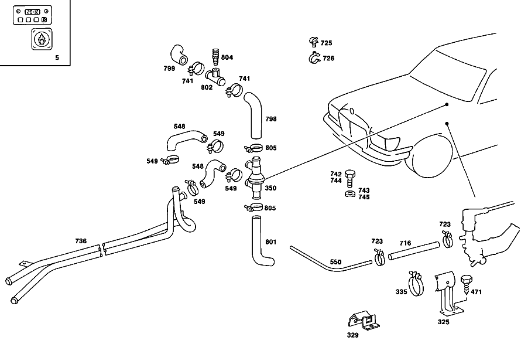

| № | Артикул | Название | Кол. | Примечание | Ограничение |
|---|---|---|---|---|---|
| 5 | A 116 500 09 98 | ОТОПИТЕЛЬ | 1 | ACCESSORY KIT,для SUBSEQUENT INSTALLATION Z 11.101/01 [402] БОЛЬШЕ НЕ ПОСТАВЛЯЕТСЯ [001] ONLY FOR USE WITH RANGE OF DELIVERY OF HEATER | |
| 5 | A 116 500 15 98 | ОТОПИТЕЛЬ | 1 | ACCESSORY KIT,для SUBSEQUENT INSTALLATION Z 11.101/07 [402] БОЛЬШЕ НЕ ПОСТАВЛЯЕТСЯ [001] ONLY FOR USE WITH RANGE OF DELIVERY OF HEATER | |
| 5 | A 116 500 31 98 | ОТОПИТЕЛЬ | 1 | ACCESSORY KIT,для SUBSEQUENT INSTALLATION Z 11.101/07 [402] БОЛЬШЕ НЕ ПОСТАВЛЯЕТСЯ [001] ONLY FOR USE WITH RANGE OF DELIVERY OF HEATER | |
| 5 | A 116 500 24 98 | ОТОПИТЕЛЬ | 1 | ACCESSORY KIT,для SUBSEQUENT INSTALLATION Z 11.101/21 [402] БОЛЬШЕ НЕ ПОСТАВЛЯЕТСЯ [412] БОЛЬШЕ НЕ ПОСТАВЛЯЕТСЯ, ЗАКАЗЫВАТЬ ОТДЕЛЬНЫЕ ДЕТАЛИ [001] ONLY FOR USE WITH RANGE OF DELIVERY OF HEATER | |
| 5 | A 116 500 33 98 | ОТОПИТЕЛЬ | 1 | КОМПЛЕКТ ПРИНАДЛЕЖ.ОТОПИТ.WEBASTO Z 11.101/21 [402] БОЛЬШЕ НЕ ПОСТАВЛЯЕТСЯ [001] ONLY FOR USE WITH RANGE OF DELIVERY OF HEATER | |
| 6 | A 116 500 02 98 | ОТОПИТЕЛЬ | 1 | ОБЪЁМ ПОСТАВКИ Z 11.101/01, Z 11.101/04 [402] БОЛЬШЕ НЕ ПОСТАВЛЯЕТСЯ | |
| 10 | A 116 500 07 98 | ОТОПИТЕЛЬ | 1 | ОБЪЁМ ПОСТАВКИ Z 11.101/07, Z 11.101/08, Z 11.101/09, Z 11.101/10 [402] БОЛЬШЕ НЕ ПОСТАВЛЯЕТСЯ | |
| 10 | A 116 500 07 98 | ОТОПИТЕЛЬ | 1 | ОБЪЁМ ПОСТАВКИ Z 11.101/21, Z 11.101/22, Z 11.101/23, Z 11.101/24 [402] БОЛЬШЕ НЕ ПОСТАВЛЯЕТСЯ | |
| 20 | A 000 159 71 01 | - Свеча накаливания | 1 | Z 11.101/01, Z 11.101/02, Z 11.101/03, Z 11.101/04, Z 11.101/05, Z 11.101/06, Z 11.101/07, Z 11.101/08, Z 11.101/09, Z 11.101/10 | |
| 20 | A 000 159 71 01 | - Свеча накаливания | 1 | Z 11.101/21, Z 11.101/22, Z 11.101/23, Z 11.101/24, Z 11.101/26, Z 11.101/27, Z 11.101/28 | |
| 25 | A 003 542 96 17 | - ДАТЧИК | - | Z 11.101/01, Z 11.101/02, Z 11.101/03, Z 11.101/04, Z 11.101/05, Z 11.101/06, Z 11.101/07, Z 11.101/08, Z 11.101/09, Z 11.101/10 [019] CONVERSION OF PART NUMBER | |
| 25 | A 000 835 07 46 | - ПРЕДОХРАНИТЕЛЬ | 1 | КОНТРОЛЬ СГОРАНИЯ Z 11.101/01, Z 11.101/02, Z 11.101/03, Z 11.101/04, Z 11.101/05, Z 11.101/06, Z 11.101/07, Z 11.101/08, Z 11.101/09, Z 11.101/10 [402] БОЛЬШЕ НЕ ПОСТАВЛЯЕТСЯ | |
| 25 | A 000 835 07 46 | - ПРЕДОХРАНИТЕЛЬ | 1 | КОНТРОЛЬ СГОРАНИЯ Z 11.101/21, Z 11.101/22, Z 11.101/23, Z 11.101/24, Z 11.101/26, Z 11.101/27, Z 11.101/28 [402] БОЛЬШЕ НЕ ПОСТАВЛЯЕТСЯ | |
| 31 | A 000 835 18 79 | - Термостат | - | Z 11.101/01, Z 11.101/02, Z 11.101/03, Z 11.101/04, Z 11.101/05, Z 11.101/06, Z 11.101/07, Z 11.101/08, Z 11.101/09, Z 11.101/10 [415] ПРИМЕЧ. ПО ЗАМЕНЕ ПРИМЕНИМО ТОЛЬКО ДЛЯ СТОЯЩИХ РЯДОМ ПОЗИЦИЙ | |
| 31 | A 000 835 37 79 | - Термостат | 1 | (УПРАВЛ.ТЕРМОСТАТ) Z 11.101/01, Z 11.101/02, Z 11.101/03, Z 11.101/04, Z 11.101/05, Z 11.101/06, Z 11.101/07, Z 11.101/08, Z 11.101/09, Z 11.101/10 [402] БОЛЬШЕ НЕ ПОСТАВЛЯЕТСЯ | |
| 31 | A 000 835 18 79 | - Термостат | - | Z 11.101/21, Z 11.101/22, Z 11.101/23, Z 11.101/24, Z 11.101/26, Z 11.101/27, Z 11.101/28 [415] ПРИМЕЧ. ПО ЗАМЕНЕ ПРИМЕНИМО ТОЛЬКО ДЛЯ СТОЯЩИХ РЯДОМ ПОЗИЦИЙ | |
| 31 | A 000 835 37 79 | - Термостат | 1 | (УПРАВЛ.ТЕРМОСТАТ) Z 11.101/21, Z 11.101/22, Z 11.101/23, Z 11.101/24, Z 11.101/26, Z 11.101/27, Z 11.101/28 [402] БОЛЬШЕ НЕ ПОСТАВЛЯЕТСЯ | |
| 36 | A 000 835 16 79 | - Термостат | 1 | ВЕНТИЛЯТОР Z 11.101/01, Z 11.101/02, Z 11.101/03, Z 11.101/04, Z 11.101/05, Z 11.101/06, Z 11.101/07, Z 11.101/08, Z 11.101/09, Z 11.101/10 | |
| 36 | A 000 835 16 79 | - Термостат | 1 | ВЕНТИЛЯТОР Z 11.101/21, Z 11.101/22, Z 11.101/23, Z 11.101/24, Z 11.101/26, Z 11.101/27, Z 11.101/28 | |
| 41 | A 003 542 98 17 | - ДАТЧИК | - | Z 11.101/01, Z 11.101/02, Z 11.101/03, Z 11.101/04, Z 11.101/05, Z 11.101/06, Z 11.101/07, Z 11.101/08, Z 11.101/09, Z 11.101/10 [019] CONVERSION OF PART NUMBER | |
| 41 | A 000 835 08 46 | - ПРЕДОХРАНИТЕЛЬ | - | Z 11.101/01, Z 11.101/02, Z 11.101/03, Z 11.101/04, Z 11.101/05, Z 11.101/06, Z 11.101/07, Z 11.101/08, Z 11.101/09, Z 11.101/10 | |
| 41 | A 000 821 01 64 | - ПРЕДОХРАНИТЕЛЬ | 1 | ГРАДУСОВ: 141 Z 11.101/01, Z 11.101/02, Z 11.101/03, Z 11.101/04, Z 11.101/05, Z 11.101/06, Z 11.101/07, Z 11.101/08, Z 11.101/09, Z 11.101/10 [402] БОЛЬШЕ НЕ ПОСТАВЛЯЕТСЯ | |
| 41 | A 000 835 08 46 | - ПРЕДОХРАНИТЕЛЬ | - | Z 11.101/21, Z 11.101/22, Z 11.101/23, Z 11.101/24, Z 11.101/26, Z 11.101/27, Z 11.101/28 | |
| 41 | A 000 821 01 64 | - ПРЕДОХРАНИТЕЛЬ | 1 | ГРАДУСОВ: 141 Z 11.101/21, Z 11.101/22, Z 11.101/23, Z 11.101/24, Z 11.101/26, Z 11.101/27, Z 11.101/28 [402] БОЛЬШЕ НЕ ПОСТАВЛЯЕТСЯ | |
| 42 | A 000 835 05 24 | - Штекер | 1 | Z 11.101/01, Z 11.101/02, Z 11.101/03, Z 11.101/04, Z 11.101/05, Z 11.101/06, Z 11.101/07, Z 11.101/08, Z 11.101/09, Z 11.101/10 [402] БОЛЬШЕ НЕ ПОСТАВЛЯЕТСЯ | |
| 42 | A 000 835 05 24 | - Штекер | 1 | Z 11.101/21, Z 11.101/22, Z 11.101/23, Z 11.101/24 [402] БОЛЬШЕ НЕ ПОСТАВЛЯЕТСЯ | |
| 44 | A 003 542 97 17 | - ДАТЧИК | - | Z 11.101/01, Z 11.101/02, Z 11.101/03, Z 11.101/04, Z 11.101/05, Z 11.101/06, Z 11.101/07, Z 11.101/08, Z 11.101/09, Z 11.101/10 [019] CONVERSION OF PART NUMBER | |
| 44 | A 000 835 10 55 | - КАТУШКА ЗАЖИГ. | - | Z 11.101/01, Z 11.101/02, Z 11.101/03, Z 11.101/04, Z 11.101/05, Z 11.101/06, Z 11.101/07, Z 11.101/08, Z 11.101/09, Z 11.101/10 [415] ПРИМЕЧ. ПО ЗАМЕНЕ ПРИМЕНИМО ТОЛЬКО ДЛЯ СТОЯЩИХ РЯДОМ ПОЗИЦИЙ | |
| 44 | A 000 835 16 55 | - КАТУШКА ЗАЖИГ. | 1 | Z 11.101/01, Z 11.101/02, Z 11.101/03, Z 11.101/04, Z 11.101/05, Z 11.101/06, Z 11.101/07, Z 11.101/08, Z 11.101/09, Z 11.101/10 | |
| 44 | A 000 835 10 55 | - КАТУШКА ЗАЖИГ. | - | Z 11.101/21, Z 11.101/22, Z 11.101/23, Z 11.101/24 [415] ПРИМЕЧ. ПО ЗАМЕНЕ ПРИМЕНИМО ТОЛЬКО ДЛЯ СТОЯЩИХ РЯДОМ ПОЗИЦИЙ | |
| 44 | A 000 835 16 55 | - КАТУШКА ЗАЖИГ. | 1 | Z 11.101/21, Z 11.101/22, Z 11.101/23, Z 11.101/24, Z 11.101/26, Z 11.101/27, Z 11.101/28 | |
| 46 | N 007976 004205 | - Шуруп | 3 | Z 11.101/21, Z 11.101/22, Z 11.101/23, Z 11.101/24, Z 11.101/26, Z 11.101/27, Z 11.101/28 | |
| 48 | A 007 545 77 28 | - ШТЕКЕР | 1 | Z 11.101/01, Z 11.101/02, Z 11.101/03, Z 11.101/04, Z 11.101/05, Z 11.101/06, Z 11.101/07, Z 11.101/08, Z 11.101/09, Z 11.101/10 | |
| 48 | A 007 545 77 28 | - ШТЕКЕР | 1 | Z 11.101/21, Z 11.101/22, Z 11.101/23, Z 11.101/24, Z 11.101/26, Z 11.101/27, Z 11.101/28 | |
| 56 | A 000 506 12 40 | - ДЕРЖАТЕЛЬ | - | Z 11.101/01, Z 11.101/02, Z 11.101/04 | |
| 56 | A 116 506 13 40 | - ДЕРЖАТЕЛЬ | 1 | КАТУШКА ЗАЖИГ. Z 11.101/01, Z 11.101/02, Z 11.101/04, Z 11.101/06, Z 11.101/07, Z 11.101/08, Z 11.101/09, Z 11.101/10 [402] БОЛЬШЕ НЕ ПОСТАВЛЯЕТСЯ | |
| 57 | A 000 506 14 40 | - ДЕРЖАТЕЛЬ | 1 | КАТУШКА ЗАЖИГ. Z 11.101/06, Z 11.101/07, Z 11.101/08, Z 11.101/09, Z 11.101/10 [402] БОЛЬШЕ НЕ ПОСТАВЛЯЕТСЯ | |
| 57 | A 000 506 14 40 | - ДЕРЖАТЕЛЬ | 1 | КАТУШКА ЗАЖИГ. Z 11.101/21, Z 11.101/22, Z 11.101/23, Z 11.101/24 [402] БОЛЬШЕ НЕ ПОСТАВЛЯЕТСЯ | |
| 60 | A 116 500 06 31 | - ДЕРЖАТЕЛЬ | 1 | ОТОПИТЕЛЬ Z 11.101/06, Z 11.101/07, Z 11.101/08, Z 11.101/09, Z 11.101/10 [402] БОЛЬШЕ НЕ ПОСТАВЛЯЕТСЯ | |
| 60 | A 116 500 06 31 | - ДЕРЖАТЕЛЬ | 1 | CONTROL UNIT AND HEATER UNIT Z 11.101/21, Z 11.101/22, Z 11.101/23, Z 11.101/24 [402] БОЛЬШЕ НЕ ПОСТАВЛЯЕТСЯ | |
| 62 | A 116 506 00 53 | - РАСПОРН. ТРУБКА | 1 | Z 11.101/06, Z 11.101/07, Z 11.101/08, Z 11.101/09, Z 11.101/10 [402] БОЛЬШЕ НЕ ПОСТАВЛЯЕТСЯ | |
| 70 | A 000 506 21 99 | - ЦИРКУЛЯЦИОННЫЙ НАСОС | - | Z 11.101/01, Z 11.101/02, Z 11.101/03, Z 11.101/04, Z 11.101/05, Z 11.101/06, Z 11.101/07, Z 11.101/08, Z 11.101/09, Z 11.101/10 | |
| 70 | A 000 506 22 99 | - ЦИРКУЛЯЦИОННЫЙ НАСОС | 1 | РАЗЪЕМЫ: 15mm Z 11.101/01, Z 11.101/02, Z 11.101/03, Z 11.101/04, Z 11.101/05, Z 11.101/06, Z 11.101/07, Z 11.101/08, Z 11.101/09, Z 11.101/10 [402] БОЛЬШЕ НЕ ПОСТАВЛЯЕТСЯ | |
| 70 | A 000 506 21 99 | - ЦИРКУЛЯЦИОННЫЙ НАСОС | - | Z 11.101/21, Z 11.101/22, Z 11.101/23, Z 11.101/24 | |
| 70 | A 000 506 22 99 | - ЦИРКУЛЯЦИОННЫЙ НАСОС | 1 | РАЗЪЕМЫ: 15mm Z 11.101/21, Z 11.101/22, Z 11.101/23, Z 11.101/24, Z 11.101/26, Z 11.101/27, Z 11.101/28 [402] БОЛЬШЕ НЕ ПОСТАВЛЯЕТСЯ | |
| 73 | N 003017 032100 | - Хомут | 1 | Z 11.101/01, Z 11.101/02, Z 11.101/03, Z 11.101/04, Z 11.101/05, Z 11.101/06, Z 11.101/07, Z 11.101/08, Z 11.101/09, Z 11.101/10 | |
| 73 | N 003017 032100 | - Хомут | 1 | Z 11.101/21, Z 11.101/22, Z 11.101/23, Z 11.101/24, Z 11.101/26, Z 11.101/27, Z 11.101/28 | |
| 75 | N 916026 060000 | - Хомут | - | 60\-80MM Z 11.101/03, Z 11.101/05, Z 11.101/06, Z 11.101/07, Z 11.101/08, Z 11.101/09, Z 11.101/10 | |
| 75 | A 006 997 27 90 | - Шланговый хомут | 2 | 60\-80 MM Z 11.101/06, Z 11.101/07, Z 11.101/08, Z 11.101/09, Z 11.101/10 | |
| 76 | A 002 997 82 90 | - СОЕДИНИТЕЛЬНЫЙ ЭЛЕМЕНТ | - | Z 11.101/03, Z 11.101/05, Z 11.101/06, Z 11.101/07, Z 11.101/08, Z 11.101/09, Z 11.101/10 | |
| 76 | N 916017 070000 | - Хомут | - | Z 11.101/03, Z 11.101/05, Z 11.101/06, Z 11.101/07, Z 11.101/08, Z 11.101/09, Z 11.101/10 | |
| 76 | N 000000 000674 | - Хомут | 2 | Z 11.101/03, Z 11.101/05, Z 11.101/06, Z 11.101/07, Z 11.101/08, Z 11.101/09, Z 11.101/10 | |
| 76 | A 002 997 82 90 | - СОЕДИНИТЕЛЬНЫЙ ЭЛЕМЕНТ | - | Z 11.101/21, Z 11.101/22, Z 11.101/23, Z 11.101/24, Z 11.101/26, Z 11.101/27, Z 11.101/28 | |
| 76 | N 916017 070000 | - Хомут | - | Z 11.101/21, Z 11.101/22, Z 11.101/23, Z 11.101/24, Z 11.101/26, Z 11.101/27, Z 11.101/28 | |
| 76 | N 000000 000674 | - Хомут | 2 | Z 11.101/21, Z 11.101/22, Z 11.101/23, Z 11.101/24, Z 11.101/26, Z 11.101/27, Z 11.101/28 | |
| 78 | A 116 203 10 82 | - ШЛАНГ | 1 | Z 11.101/01, Z 11.101/02, Z 11.101/04, Z 11.101/06, Z 11.101/07, Z 11.101/08, Z 11.101/09, Z 11.101/10 [402] БОЛЬШЕ НЕ ПОСТАВЛЯЕТСЯ | |
| 78 | A 116 203 10 82 | - ШЛАНГ | 1 | НАСОС К ТРУБЕ ГОРЯЧ. ОЖ Z 11.101/21, Z 11.101/22, Z 11.101/23, Z 11.101/24, Z 11.101/26, Z 11.101/27, Z 11.101/28 [402] БОЛЬШЕ НЕ ПОСТАВЛЯЕТСЯ | |
| 79 | A 116 203 27 82 | - ШЛАНГ | 1 | ОБРАТН.КЛАПАН К ТЕРМОСТАТУ Z 11.101/21, Z 11.101/22, Z 11.101/23, Z 11.101/24 [402] БОЛЬШЕ НЕ ПОСТАВЛЯЕТСЯ | |
| 80 | A 116 501 33 82 | - ШЛАНГ | 1 | FROM THERMOSTAT TO PUMP Z 11.101/21, Z 11.101/22, Z 11.101/23, Z 11.101/24 [402] БОЛЬШЕ НЕ ПОСТАВЛЯЕТСЯ | |
| 81 | A 116 506 02 35 | - ШЛАНГ | 1 | ТРУБОПРОВ. ОЖ ОТОПИТ. К ТЕРМОСТАТУ Z 11.101/21, Z 11.101/22, Z 11.101/23, Z 11.101/24 [402] БОЛЬШЕ НЕ ПОСТАВЛЯЕТСЯ | |
| 96 | A 116 203 45 82 | - ШЛАНГ | - | Z 11.101/06, Z 11.101/07, Z 11.101/08, Z 11.101/09, Z 11.101/10 | |
| 96 | A 116 501 31 82 | - ШЛАНГ | 1 | ОТОПИТ.К ВЕНТИЛ.КЛАПАНУ Z 11.101/06, Z 11.101/07, Z 11.101/08, Z 11.101/09, Z 11.101/10 [402] БОЛЬШЕ НЕ ПОСТАВЛЯЕТСЯ | |
| 96 | A 116 203 45 82 | - ШЛАНГ | - | Z 11.101/21, Z 11.101/22, Z 11.101/23, Z 11.101/24 | |
| 96 | A 116 501 31 82 | - ШЛАНГ | 1 | ОТОПИТ.К ВЕНТИЛ.КЛАПАНУ Z 11.101/21, Z 11.101/22, Z 11.101/23, Z 11.101/24 [402] БОЛЬШЕ НЕ ПОСТАВЛЯЕТСЯ | |
| 97 | A 116 501 32 82 | - ШЛАНГ | 1 | FROM DE\-AERATION VALVE TO THERMOSTAT Z 11.101/06, Z 11.101/07, Z 11.101/08, Z 11.101/09, Z 11.101/10 [402] БОЛЬШЕ НЕ ПОСТАВЛЯЕТСЯ | |
| 97 | A 116 501 32 82 | - ШЛАНГ | 1 | ТЕРМОСТАТ К ОТОПИТЕЛЮ Z 11.101/21, Z 11.101/22, Z 11.101/23, Z 11.101/24 [402] БОЛЬШЕ НЕ ПОСТАВЛЯЕТСЯ | |
| 98 | A 116 500 00 71 | - ЭЛЕМЕНТ ПРОМЕЖУТОЧНЫЙ | 1 | Z 11.101/06, Z 11.101/07, Z 11.101/08, Z 11.101/09, Z 11.101/10 [402] БОЛЬШЕ НЕ ПОСТАВЛЯЕТСЯ | |
| 98 | A 116 500 00 71 | - ЭЛЕМЕНТ ПРОМЕЖУТОЧНЫЙ | 1 | Z 11.101/21, Z 11.101/22, Z 11.101/23, Z 11.101/24 [402] БОЛЬШЕ НЕ ПОСТАВЛЯЕТСЯ | |
| 99 | A 000 420 08 55 | - Клапан выпуска воздуха | 1 | Z 11.101/06, Z 11.101/07, Z 11.101/08, Z 11.101/09, Z 11.101/10 | |
| 99 | A 000 420 08 55 | - Клапан выпуска воздуха | 1 | Z 11.101/21, Z 11.101/22, Z 11.101/23, Z 11.101/24 | |
| 100 | N 916026 016001 | - Хомут | - | 16\-24MM Z 11.101/06, Z 11.101/07, Z 11.101/08, Z 11.101/09, Z 11.101/10 | |
| 100 | A 005 997 01 90 | - Хомут для шланга | 2 | 14\-24 MM Z 11.101/06, Z 11.101/07, Z 11.101/08, Z 11.101/09, Z 11.101/10 | |
| 100 | N 916026 016001 | - Хомут | - | 16\-24MM Z 11.101/01, Z 11.101/02, Z 11.101/04, Z 11.101/06, Z 11.101/07, Z 11.101/08, Z 11.101/09, Z 11.101/10 | |
| 100 | A 005 997 01 90 | - Хомут для шланга | 2 | 14\-24 MM Z 11.101/01, Z 11.101/02, Z 11.101/04, Z 11.101/06, Z 11.101/07, Z 11.101/08, Z 11.101/09, Z 11.101/10 | |
| 100 | N 916026 016001 | - Хомут | - | 16\-24MM Z 11.101/21, Z 11.101/22, Z 11.101/23, Z 11.101/24 | |
| 100 | A 005 997 01 90 | - Хомут для шланга | 2 | 14\-24 MM Z 11.101/21, Z 11.101/22, Z 11.101/23, Z 11.101/24 | |
| 102 | A 094 466 05 00 | - Резиновое кольцо | 3 | Z 11.101/21, Z 11.101/22 | |
| 103 | A 116 203 13 82 | - ШЛАНГ | - | Z 11.101/21, Z 11.101/22, Z 11.101/23, Z 11.101/24 | |
| 103 | A 123 506 64 35 | - ШЛАНГ | 1 | ТОПЛИВНЫЙ ШЛАНГ Z 11.101/21, Z 11.101/22, Z 11.101/23, Z 11.101/24 | |
| 104 | A 116 203 14 82 | - ШЛАНГ | - | Z 11.101/21, Z 11.101/22, Z 11.101/23, Z 11.101/24 | |
| 104 | A 123 506 65 35 | - ШЛАНГ | 1 | ТОПЛИВНЫЙ ШЛАНГ Z 11.101/21, Z 11.101/22, Z 11.101/23, Z 11.101/24 | |
| 110 | A 116 500 01 32 | - ПОДПОРКА | 1 | ОТОПИТЕЛЬ Z 11.101/01, Z 11.101/02, Z 11.101/04 [402] БОЛЬШЕ НЕ ПОСТАВЛЯЕТСЯ | |
| 112 | N 916026 016001 | - Хомут | - | 16\-24MM Z 11.101/21, Z 11.101/22, Z 11.101/23, Z 11.101/24, Z 11.101/26, Z 11.101/27, Z 11.101/28 | |
| 112 | A 005 997 01 90 | - Хомут для шланга | 4 | ТОПЛИВНЫЙ ШЛАНГ; 14\-24 MM Z 11.101/21, Z 11.101/22, Z 11.101/23, Z 11.101/24 | |
| 112 | A 005 997 01 90 | - Хомут для шланга | 2 | НАСОС К ТРУБЕ ГОРЯЧ. ОЖ; 14\-24 MM Z 11.101/21, Z 11.101/22, Z 11.101/23, Z 11.101/24 | |
| 113 | A 116 501 07 20 | - ДЕРЖАТЕЛЬ | 1 | ОТОПИТЕЛЬ Z 11.101/01, Z 11.101/02, Z 11.101/04 [402] БОЛЬШЕ НЕ ПОСТАВЛЯЕТСЯ | |
| 117 | A 003 203 04 75 | - РЕГУЛЯТОР | - | Z 11.101/01, Z 11.101/04 | |
| 117 | A 003 203 34 75 | - РЕГУЛЯТОР | 1 | Z 11.101/01, Z 11.101/04 | |
| 118 | A 003 203 33 75 | - РЕГУЛЯТОР | - | Z 11.101/06, Z 11.101/07, Z 11.101/08, Z 11.101/09, Z 11.101/10 | |
| 118 | A 003 203 40 75 | - РЕГУЛЯТОР | 1 | Z 11.101/06, Z 11.101/07, Z 11.101/08, Z 11.101/09, Z 11.101/10 [402] БОЛЬШЕ НЕ ПОСТАВЛЯЕТСЯ | |
| 118 | A 003 203 40 75 | - РЕГУЛЯТОР | 1 | Z 11.101/21, Z 11.101/22, Z 11.101/23, Z 11.101/24 [402] БОЛЬШЕ НЕ ПОСТАВЛЯЕТСЯ | |
| 119 | N 916026 045000 | - Хомут | - | Z 11.101/21, Z 11.101/22, Z 11.101/23, Z 11.101/24, Z 11.101/26, Z 11.101/27, Z 11.101/28 | |
| 119 | A 006 997 06 90 | - Хомут для шланга | 1 | Термостат; 45\-55 MM Z 11.101/21, Z 11.101/22, Z 11.101/23, Z 11.101/24, Z 11.101/26, Z 11.101/27, Z 11.101/28 | |
| 119 | N 916026 016001 | - Хомут | - | 16\-24MM Z 11.101/21, Z 11.101/22, Z 11.101/23, Z 11.101/24 | |
| 119 | A 005 997 01 90 | - Хомут для шланга | 6 | 14\-24 MM Z 11.101/21, Z 11.101/22, Z 11.101/23, Z 11.101/24 | |
| 133 | N 916026 050000 | - Хомут | - | 50\-70MM Z 11.101/01, Z 11.101/02, Z 11.101/03, Z 11.101/04, Z 11.101/05, Z 11.101/06, Z 11.101/07, Z 11.101/08, Z 11.101/09, Z 11.101/10 | |
| 133 | A 006 997 26 90 | - Шланговый хомут | 1 | 50\-70/9 C7 W3 Z 11.101/01, Z 11.101/02, Z 11.101/03, Z 11.101/04, Z 11.101/05, Z 11.101/06, Z 11.101/07, Z 11.101/08, Z 11.101/09, Z 11.101/10 | |
| 133 | A 002 997 33 90 | - хомут | - | Z 11.101/01, Z 11.101/02, Z 11.101/03, Z 11.101/04, Z 11.101/05, Z 11.101/06, Z 11.101/07, Z 11.101/08, Z 11.101/09, Z 11.101/10 | |
| 133 | A 004 997 68 90 | - хомут | 1 | ВЫПУСКНАЯ ТРУБА; 24\-26/ 16 MM Z 11.101/01, Z 11.101/02, Z 11.101/03, Z 11.101/04, Z 11.101/05, Z 11.101/06, Z 11.101/07, Z 11.101/08, Z 11.101/09, Z 11.101/10 | |
| 141 | A 116 203 27 82 | - ШЛАНГ | 1 | ОБРАТН.КЛАПАН К ТЕРМОСТАТУ Z 11.101/06, Z 11.101/07, Z 11.101/08, Z 11.101/09, Z 11.101/10 [402] БОЛЬШЕ НЕ ПОСТАВЛЯЕТСЯ | |
| 165 | A 000 500 00 51 | - БЛОК УПРАВЛЕНИЯ | - | Z 11.101/21, Z 11.101/22, Z 11.101/23, Z 11.101/24 [065] ИСПОЛЬЗ.СТАР.НОМЕР ДЕТАЛИ ПРИ ШАССИ 123.030 028219 123.007,033 066426 123.043 016040 123.050 003503 123.053 017762 123.083 005593 123.086 004313 123.093 005319 | |
| 165 | A 000 500 02 51 | - БЛОК УПРАВЛЕНИЯ | 1 | (МОДУЛЬ ПИТАНИЯ) Z 11.101/21, Z 11.101/22, Z 11.101/23, Z 11.101/24, Z 11.101/26, Z 11.101/27, Z 11.101/28 [402] БОЛЬШЕ НЕ ПОСТАВЛЯЕТСЯ | |
| 168 | A 000 545 93 32 | - БЛОК УПРАВЛЕНИЯ | - | Z 11.101/21, Z 11.101/22, Z 11.101/23, Z 11.101/24 | |
| 168 | A 001 545 72 32 | - БЛОК УПРАВЛЕНИЯ | 1 | (БЛОК УПРАВЛЕНИЯ) Z 11.101/21, Z 11.101/22, Z 11.101/23, Z 11.101/24, Z 11.101/26, Z 11.101/27, Z 11.101/28 | |
| 169 | A 000 500 00 73 | - РАСПРЕДЕЛИТЕЛЬ | 1 | ВЕНТИЛ.КОЛЬЦ.КАНАЛА С ДОЗИР. Z 11.101/21, Z 11.101/22, Z 11.101/23, Z 11.101/24, Z 11.101/26, Z 11.101/27, Z 11.101/28 [402] БОЛЬШЕ НЕ ПОСТАВЛЯЕТСЯ | |
| 173 | A 006 997 97 81 | - КАБ. ВТУЛКА | 1 | Z 11.101/21, Z 11.101/22, Z 11.101/23, Z 11.101/24, Z 11.101/26, Z 11.101/27, Z 11.101/28 [402] БОЛЬШЕ НЕ ПОСТАВЛЯЕТСЯ | |
| 174 | A 006 997 98 81 | - втулка | 1 | Z 11.101/21, Z 11.101/22, Z 11.101/23, Z 11.101/24, Z 11.101/26, Z 11.101/27, Z 11.101/28 | |
| 175 | A 006 997 99 81 | - КАБ. ВТУЛКА | 1 | Z 11.101/21, Z 11.101/22, Z 11.101/23, Z 11.101/24, Z 11.101/26, Z 11.101/27, Z 11.101/28 [402] БОЛЬШЕ НЕ ПОСТАВЛЯЕТСЯ | |
| 176 | A 000 506 04 09 | - РАСПРЕДЕЛИТЕЛЬ | - | Z 11.101/21, Z 11.101/22, Z 11.101/23, Z 11.101/24 | |
| 176 | A 000 506 06 09 | - РАСПРЕДЕЛИТЕЛЬ | 1 | Z 11.101/21, Z 11.101/22, Z 11.101/23, Z 11.101/24 [402] БОЛЬШЕ НЕ ПОСТАВЛЯЕТСЯ | |
| 177 | A 000 506 10 35 | - ШЛАНГ | 1 | Z 11.101/21, Z 11.101/22, Z 11.101/23, Z 11.101/24 | |
| 178 | A 000 506 11 35 | - ШЛАНГ | - | Z 11.101/21, Z 11.101/22, Z 11.101/23, Z 11.101/24 | |
| 178 | A 112 476 12 26 | - Шланг | 1 | 33 MM Z 11.101/21, Z 11.101/22, Z 11.101/23, Z 11.101/24 [404] ЗАКАЗЫВАТЬ ПОГОННЫМИ МЕТРАМИ | |
| 179 | A 000 506 12 35 | - ШЛАНГ | 1 | Z 11.101/21, Z 11.101/22, Z 11.101/23, Z 11.101/24, Z 11.101/26, Z 11.101/27, Z 11.101/28 [402] БОЛЬШЕ НЕ ПОСТАВЛЯЕТСЯ | |
| 182 | N 916026 020001 | - Хомут | - | 20\-27 MM Z 11.101/21, Z 11.101/22, Z 11.101/23, Z 11.101/24 | |
| 182 | N 000000 000667 | - Хомут | 2 | 23\-30 MM Z 11.101/21, Z 11.101/22, Z 11.101/23, Z 11.101/24 | |
| 182 | N 916026 016001 | - Хомут | - | 16\-24MM Z 11.101/21, Z 11.101/22, Z 11.101/23, Z 11.101/24 | |
| 182 | A 005 997 01 90 | - Хомут для шланга | 2 | 14\-24 MM Z 11.101/21, Z 11.101/22, Z 11.101/23, Z 11.101/24 | |
| 183 | A 000 835 03 91 | - ХОМУТ | - | Z 11.101/21, Z 11.101/22, Z 11.101/23, Z 11.101/24, Z 11.101/26, Z 11.101/27, Z 11.101/28 | |
| 183 | A 460 831 01 79 | - Хомут | 1 | Z 11.101/21, Z 11.101/22, Z 11.101/23, Z 11.101/24, Z 11.101/26, Z 11.101/27, Z 11.101/28 | |
| 204 | A 116 506 02 35 | - ШЛАНГ | 1 | ТРУБОПРОВ. ОЖ ОТОПИТ. К ТЕРМОСТАТУ Z 11.101/06, Z 11.101/07, Z 11.101/08, Z 11.101/09, Z 11.101/10 [402] БОЛЬШЕ НЕ ПОСТАВЛЯЕТСЯ | |
| 214 | A 116 501 33 82 | - ШЛАНГ | 1 | ТЕРМОСТАТ К ОТОПИТЕЛЮ Z 11.101/06, Z 11.101/07, Z 11.101/08, Z 11.101/09, Z 11.101/10 [402] БОЛЬШЕ НЕ ПОСТАВЛЯЕТСЯ | |
| 218 | A 116 203 07 82 | - ШЛАНГ | 1 | FROM THERMOSTAT TO PUMP Z 11.101/01, Z 11.101/02, Z 11.101/04 [402] БОЛЬШЕ НЕ ПОСТАВЛЯЕТСЯ | |
| 219 | N 916026 016001 | - Хомут | - | 16\-24MM Z 11.101/01, Z 11.101/02, Z 11.101/03, Z 11.101/04, Z 11.101/05, Z 11.101/06, Z 11.101/07, Z 11.101/08, Z 11.101/09, Z 11.101/10 | |
| 219 | A 005 997 01 90 | - Хомут для шланга | 4 | 14\-24 MM Z 11.101/01, Z 11.101/02, Z 11.101/03, Z 11.101/04, Z 11.101/05, Z 11.101/06, Z 11.101/07, Z 11.101/08, Z 11.101/09, Z 11.101/10 | |
| 221 | A 116 203 15 82 | - ШЛАНГ | 1 | Z 11.101/01, Z 11.101/02, Z 11.101/04 [402] БОЛЬШЕ НЕ ПОСТАВЛЯЕТСЯ | |
| 224 | A 116 203 29 82 | - ШЛАНГ | 1 | Z 11.101/01, Z 11.101/02, Z 11.101/04 [402] БОЛЬШЕ НЕ ПОСТАВЛЯЕТСЯ | |
| 225 | A 116 203 13 82 | - ШЛАНГ | - | Z 11.101/03, Z 11.101/05, Z 11.101/06, Z 11.101/07, Z 11.101/08, Z 11.101/09, Z 11.101/10 | |
| 225 | A 123 506 64 35 | - ШЛАНГ | 1 | Z 11.101/03, Z 11.101/05, Z 11.101/06, Z 11.101/07, Z 11.101/08, Z 11.101/09, Z 11.101/10 | |
| 226 | A 116 203 14 82 | - ШЛАНГ | - | Z 11.101/03, Z 11.101/05, Z 11.101/06, Z 11.101/07, Z 11.101/08, Z 11.101/09, Z 11.101/10 | |
| 226 | A 123 506 65 35 | - ШЛАНГ | 1 | Z 11.101/03, Z 11.101/05, Z 11.101/06, Z 11.101/07, Z 11.101/08, Z 11.101/09, Z 11.101/10 | |
| 228 | A 115 546 00 35 | - КОЛПАЧОК | 1 | Z 11.101/06, Z 11.101/07, Z 11.101/08, Z 11.101/09, Z 11.101/10 [402] БОЛЬШЕ НЕ ПОСТАВЛЯЕТСЯ | |
| 228 | A 115 546 00 35 | - КОЛПАЧОК | 1 | Z 11.101/21, Z 11.101/22, Z 11.101/23, Z 11.101/24, Z 11.101/26, Z 11.101/27, Z 11.101/28 [402] БОЛЬШЕ НЕ ПОСТАВЛЯЕТСЯ | |
| 229 | N 916026 020001 | - Хомут | - | 20\-27 MM Z 11.101/01, Z 11.101/02, Z 11.101/03, Z 11.101/04, Z 11.101/05, Z 11.101/06, Z 11.101/07, Z 11.101/08, Z 11.101/09, Z 11.101/10 | |
| 229 | N 000000 000667 | - Хомут | 1 | 23\-30 MM Z 11.101/01, Z 11.101/02, Z 11.101/04 | |
| 229 | N 000000 000667 | - Хомут | 2 | 23\-30 MM Z 11.101/03, Z 11.101/05, Z 11.101/06, Z 11.101/07, Z 11.101/08, Z 11.101/09, Z 11.101/10 | |
| 230 | N 916026 016001 | - Хомут | - | 16\-24MM Z 11.101/01, Z 11.101/02, Z 11.101/03, Z 11.101/04, Z 11.101/05, Z 11.101/06, Z 11.101/07, Z 11.101/08, Z 11.101/09, Z 11.101/10 | |
| 230 | A 005 997 01 90 | - Хомут для шланга | 1 | 14\-24 MM Z 11.101/01, Z 11.101/02, Z 11.101/04 | |
| 230 | A 005 997 01 90 | - Хомут для шланга | 2 | 14\-24 MM Z 11.101/06, Z 11.101/07, Z 11.101/08, Z 11.101/09, Z 11.101/10 | |
| 232 | A 116 500 00 71 | - ЭЛЕМЕНТ ПРОМЕЖУТОЧНЫЙ | 1 | Z 11.101/06, Z 11.101/07, Z 11.101/08, Z 11.101/09, Z 11.101/10 [402] БОЛЬШЕ НЕ ПОСТАВЛЯЕТСЯ | |
| 236 | A 000 420 08 55 | - Клапан выпуска воздуха | 1 | Z 11.101/01, Z 11.101/02, Z 11.101/04, Z 11.101/07, Z 11.101/08, Z 11.101/09, Z 11.101/10 | |
| 240 | A 116 501 31 82 | - ШЛАНГ | 1 | ОТОПИТ.К ВЕНТИЛ.КЛАПАНУ Z 11.101/06, Z 11.101/07, Z 11.101/08, Z 11.101/09, Z 11.101/10 [402] БОЛЬШЕ НЕ ПОСТАВЛЯЕТСЯ | |
| 244 | A 116 501 32 82 | - ШЛАНГ | 1 | FROM DE\-AERATION VALVE TO THERMOSTAT Z 11.101/06, Z 11.101/07, Z 11.101/08, Z 11.101/09, Z 11.101/10 [402] БОЛЬШЕ НЕ ПОСТАВЛЯЕТСЯ | |
| 245 | N 916026 016001 | - Хомут | - | 16\-24MM Z 11.101/01, Z 11.101/02, Z 11.101/04, Z 11.101/06, Z 11.101/07, Z 11.101/08, Z 11.101/09, Z 11.101/10 | |
| 245 | A 005 997 01 90 | - Хомут для шланга | 4 | 14\-24 MM Z 11.101/01, Z 11.101/02, Z 11.101/04 | |
| 245 | A 005 997 01 90 | - Хомут для шланга | 10 | 14\-24 MM Z 11.101/06, Z 11.101/07, Z 11.101/08, Z 11.101/09, Z 11.101/10 | |
| 246 | A 116 835 01 98 | - Уплотнение | 2 | Z 11.101/01, Z 11.101/02, Z 11.101/04, Z 11.101/09, Z 11.101/10 | |
| 246 | A 116 835 01 98 | - Уплотнение | 3 | Z 11.101/06, Z 11.101/07, Z 11.101/08 | |
| 247 | A 094 466 05 00 | - Резиновое кольцо | 3 | Z 11.101/06, Z 11.101/07, Z 11.101/08 | |
| 248 | N 007981 004233 | - Шуруп | - | Z 11.101/06, Z 11.101/07, Z 11.101/08, Z 11.101/09, Z 11.101/10 | |
| 248 | N 000000 000460 | - Шуруп | 2 | 4.8X13 Z 11.101/06, Z 11.101/07, Z 11.101/08, Z 11.101/09, Z 11.101/10 | |
| 253 | A 000 492 00 01 | - ВЫПУСКНАЯ ТРУБА ПЕРЕДН. | - | Z 11.101/01, Z 11.101/02, Z 11.101/04, Z 11.101/07, Z 11.101/08, Z 11.101/09, Z 11.101/10 | |
| 253 | A 000 492 09 01 | - ВЫПУСКНАЯ ТРУБА ПЕРЕДН. | - | Z 11.101/01, Z 11.101/02, Z 11.101/04, Z 11.101/07, Z 11.101/08, Z 11.101/09, Z 11.101/10 | |
| 253 | A 000 835 41 97 | - Шланг | 1 | ВЫПУСКН. ТРУБА НА ГЛУШИТЕЛЕ Z 11.101/01, Z 11.101/02, Z 11.101/04, Z 11.101/07, Z 11.101/08, Z 11.101/09, Z 11.101/10 [404] ЗАКАЗЫВАТЬ ПОГОННЫМИ МЕТРАМИ | |
| 255 | A 000 500 00 51 | - БЛОК УПРАВЛЕНИЯ | - | Z 11.101/01, Z 11.101/02, Z 11.101/03, Z 11.101/04, Z 11.101/05, Z 11.101/06, Z 11.101/07, Z 11.101/08, Z 11.101/09, Z 11.101/10 [065] ИСПОЛЬЗ.СТАР.НОМЕР ДЕТАЛИ ПРИ ШАССИ 123.030 028219 123.007,033 066426 123.043 016040 123.050 003503 123.053 017762 123.083 005593 123.086 004313 123.093 005319 | |
| 255 | A 000 500 02 51 | - БЛОК УПРАВЛЕНИЯ | 1 | (МОДУЛЬ ПИТАНИЯ) Z 11.101/01, Z 11.101/02, Z 11.101/03, Z 11.101/04, Z 11.101/05, Z 11.101/06, Z 11.101/07, Z 11.101/08, Z 11.101/09, Z 11.101/10 [402] БОЛЬШЕ НЕ ПОСТАВЛЯЕТСЯ | |
| 259 | A 000 545 93 32 | - БЛОК УПРАВЛЕНИЯ | - | Z 11.101/01, Z 11.101/02, Z 11.101/03, Z 11.101/04, Z 11.101/05, Z 11.101/06, Z 11.101/07, Z 11.101/08, Z 11.101/09, Z 11.101/10 | |
| 259 | A 001 545 72 32 | - БЛОК УПРАВЛЕНИЯ | 1 | (БЛОК УПРАВЛЕНИЯ) Z 11.101/01, Z 11.101/02, Z 11.101/03, Z 11.101/04, Z 11.101/05, Z 11.101/06, Z 11.101/07, Z 11.101/08, Z 11.101/09, Z 11.101/10 | |
| 261 | A 000 500 00 73 | - РАСПРЕДЕЛИТЕЛЬ | 1 | ВЕНТИЛ.КОЛЬЦ.КАНАЛА С ДОЗИР. Z 11.101/01, Z 11.101/02, Z 11.101/03, Z 11.101/04, Z 11.101/05, Z 11.101/06, Z 11.101/07, Z 11.101/08, Z 11.101/09, Z 11.101/10 [402] БОЛЬШЕ НЕ ПОСТАВЛЯЕТСЯ | |
| 265 | A 006 997 97 81 | - КАБ. ВТУЛКА | 1 | Z 11.101/01, Z 11.101/02, Z 11.101/03, Z 11.101/04, Z 11.101/05, Z 11.101/06, Z 11.101/07, Z 11.101/08, Z 11.101/09, Z 11.101/10 [402] БОЛЬШЕ НЕ ПОСТАВЛЯЕТСЯ | |
| 266 | A 006 997 98 81 | - втулка | 1 | Z 11.101/01, Z 11.101/02, Z 11.101/03, Z 11.101/04, Z 11.101/05, Z 11.101/06, Z 11.101/07, Z 11.101/08, Z 11.101/09, Z 11.101/10 | |
| 267 | A 006 997 99 81 | - КАБ. ВТУЛКА | 1 | Z 11.101/01, Z 11.101/02, Z 11.101/03, Z 11.101/04, Z 11.101/05, Z 11.101/06, Z 11.101/07, Z 11.101/08, Z 11.101/09, Z 11.101/10 [402] БОЛЬШЕ НЕ ПОСТАВЛЯЕТСЯ | |
| 273 | A 000 506 04 09 | - РАСПРЕДЕЛИТЕЛЬ | - | Z 11.101/01, Z 11.101/02, Z 11.101/03, Z 11.101/04, Z 11.101/05, Z 11.101/06, Z 11.101/07, Z 11.101/08, Z 11.101/09, Z 11.101/10 | |
| 273 | A 000 506 06 09 | - РАСПРЕДЕЛИТЕЛЬ | 1 | Z 11.101/03, Z 11.101/05, Z 11.101/06, Z 11.101/07, Z 11.101/08, Z 11.101/09, Z 11.101/10 [402] БОЛЬШЕ НЕ ПОСТАВЛЯЕТСЯ | |
| 280 | A 000 506 10 35 | - ШЛАНГ | 1 | Z 11.101/01, Z 11.101/02, Z 11.101/03, Z 11.101/04, Z 11.101/05, Z 11.101/06, Z 11.101/07, Z 11.101/08, Z 11.101/09, Z 11.101/10 | |
| 284 | A 000 506 11 35 | - ШЛАНГ | - | Z 11.101/01, Z 11.101/02, Z 11.101/03, Z 11.101/04, Z 11.101/05, Z 11.101/06, Z 11.101/07, Z 11.101/08, Z 11.101/09, Z 11.101/10 | |
| 284 | A 112 476 12 26 | - Шланг | 1 | 33 MM Z 11.101/01, Z 11.101/02, Z 11.101/03, Z 11.101/04, Z 11.101/05, Z 11.101/06, Z 11.101/07, Z 11.101/08, Z 11.101/09, Z 11.101/10 [404] ЗАКАЗЫВАТЬ ПОГОННЫМИ МЕТРАМИ | |
| 285 | A 000 506 12 35 | - ШЛАНГ | 1 | Z 11.101/03, Z 11.101/05, Z 11.101/06, Z 11.101/07, Z 11.101/08, Z 11.101/09, Z 11.101/10 [402] БОЛЬШЕ НЕ ПОСТАВЛЯЕТСЯ | |
| 287 | N 916026 016001 | - Хомут | - | 16\-24MM Z 11.101/01, Z 11.101/02, Z 11.101/03, Z 11.101/04, Z 11.101/05, Z 11.101/06, Z 11.101/07, Z 11.101/08, Z 11.101/09, Z 11.101/10 | |
| 287 | A 005 997 01 90 | - Хомут для шланга | 4 | 14\-24 MM Z 11.101/01, Z 11.101/02, Z 11.101/03, Z 11.101/04, Z 11.101/05, Z 11.101/06, Z 11.101/07, Z 11.101/08, Z 11.101/09, Z 11.101/10 | |
| 288 | A 000 835 03 91 | - ХОМУТ | - | Z 11.101/01, Z 11.101/02, Z 11.101/03, Z 11.101/04, Z 11.101/05, Z 11.101/06, Z 11.101/07, Z 11.101/08, Z 11.101/09, Z 11.101/10 | |
| 288 | A 460 831 01 79 | - Хомут | 1 | Z 11.101/01, Z 11.101/02, Z 11.101/03, Z 11.101/04, Z 11.101/05, Z 11.101/06, Z 11.101/07, Z 11.101/08, Z 11.101/09, Z 11.101/10 | |
| 300 | A 116 500 00 31 | - ДЕРЖАТЕЛЬ | 1 | БЛОК УПРАВЛЕНИЯ Z 11.101/01, Z 11.101/02, Z 11.101/04 [402] БОЛЬШЕ НЕ ПОСТАВЛЯЕТСЯ | |
| 310 | A 001 540 04 97 | - КЛАПАН | - | Z 11.101/01, Z 11.101/02, Z 11.101/04 | |
| 310 | A 001 540 35 97 | - КЛАПАН | - | Z 11.101/01, Z 11.101/02, Z 11.101/04 | |
| 310 | A 001 540 68 97 | - КЛАПАН | - | Z 11.101/01, Z 11.101/02, Z 11.101/04 | |
| 310 | A 001 540 70 97 | - КЛАПАН | - | Z 11.101/01, Z 11.101/02, Z 11.101/04 | |
| 310 | A 001 540 86 97 | - Электромагнитный клапан | 1 | Z 11.101/01, Z 11.101/02, Z 11.101/04 | |
| 310 | A 001 540 86 97 | Электромагнитный клапан | 1 | Z 11.101/01, Z 11.101/02, Z 11.101/04 | |
| 311 | N 007981 004233 | - Шуруп | - | Z 11.101/01, Z 11.101/02, Z 11.101/04 | |
| 311 | N 000000 000460 | - Шуруп | 2 | 4.8X13 Z 11.101/01, Z 11.101/02, Z 11.101/04 | |
| 321 | A 000 470 08 94 | - НАСОС ДОП. | - | Z 11.101/01, Z 11.101/02, Z 11.101/03, Z 11.101/04, Z 11.101/05, Z 11.101/06, Z 11.101/07, Z 11.101/08, Z 11.101/09, Z 11.101/10 | |
| 321 | A 000 470 15 94 | - НАСОС ДОП. | 1 | Z 11.101/01, Z 11.101/02, Z 11.101/03, Z 11.101/04, Z 11.101/05, Z 11.101/06, Z 11.101/07, Z 11.101/08, Z 11.101/09, Z 11.101/10 [402] БОЛЬШЕ НЕ ПОСТАВЛЯЕТСЯ | |
| 321 | A 000 470 08 94 | - НАСОС ДОП. | - | Z 11.101/21, Z 11.101/22, Z 11.101/23, Z 11.101/24 | |
| 321 | A 000 470 15 94 | - НАСОС ДОП. | 1 | Z 11.101/21, Z 11.101/22, Z 11.101/23, Z 11.101/24, Z 11.101/26, Z 11.101/27, Z 11.101/28 [402] БОЛЬШЕ НЕ ПОСТАВЛЯЕТСЯ | |
| 322 | A 123 546 02 35 | - КОЛПАЧОК | 1 | Z 11.101/01, Z 11.101/02, Z 11.101/03, Z 11.101/04, Z 11.101/05, Z 11.101/06, Z 11.101/07, Z 11.101/08, Z 11.101/09, Z 11.101/10 | |
| 322 | A 123 546 02 35 | - КОЛПАЧОК | 1 | Z 11.101/21, Z 11.101/22, Z 11.101/23, Z 11.101/24, Z 11.101/26, Z 11.101/27, Z 11.101/28 | |
| 323 | A 000 835 23 72 | - КЛАПАН | 1 | Z 11.101/01, Z 11.101/02, Z 11.101/03, Z 11.101/04, Z 11.101/05, Z 11.101/06, Z 11.101/07, Z 11.101/08, Z 11.101/09, Z 11.101/10 [402] БОЛЬШЕ НЕ ПОСТАВЛЯЕТСЯ | |
| 323 | A 000 835 23 72 | - КЛАПАН | 1 | Z 11.101/21, Z 11.101/22, Z 11.101/23, Z 11.101/24, Z 11.101/26, Z 11.101/27, Z 11.101/28 [402] БОЛЬШЕ НЕ ПОСТАВЛЯЕТСЯ | |
| 324 | A 000 545 07 45 | - Защитный колпачок | 1 | Z 11.101/01, Z 11.101/02, Z 11.101/03, Z 11.101/04, Z 11.101/05, Z 11.101/06, Z 11.101/07, Z 11.101/08, Z 11.101/09, Z 11.101/10 | |
| 324 | A 000 545 07 45 | - Защитный колпачок | 1 | Z 11.101/21, Z 11.101/22, Z 11.101/23, Z 11.101/24, Z 11.101/26, Z 11.101/27, Z 11.101/28 | |
| 330 | A 116 478 07 40 | - ДЕРЖАТЕЛЬ | 1 | ТОПЛИВНЫЙ Z 11.101/01, Z 11.101/03, Z 11.101/04, Z 11.101/05, Z 11.101/06, Z 11.101/07, Z 11.101/08, Z 11.101/09, Z 11.101/10 [402] БОЛЬШЕ НЕ ПОСТАВЛЯЕТСЯ | |
| 330 | A 116 478 07 40 | - ДЕРЖАТЕЛЬ | 1 | ТОПЛИВНЫЙ Z 11.101/21, Z 11.101/22, Z 11.101/23, Z 11.101/24 [402] БОЛЬШЕ НЕ ПОСТАВЛЯЕТСЯ | |
| 334 | A 000 478 00 84 | - ВКЛАДКА | 1 | Z 11.101/01, Z 11.101/02, Z 11.101/03, Z 11.101/04, Z 11.101/05, Z 11.101/06, Z 11.101/07, Z 11.101/08, Z 11.101/09, Z 11.101/10 [402] БОЛЬШЕ НЕ ПОСТАВЛЯЕТСЯ | |
| 334 | A 000 478 00 84 | - ВКЛАДКА | 1 | Z 11.101/21, Z 11.101/22, Z 11.101/23, Z 11.101/24 [402] БОЛЬШЕ НЕ ПОСТАВЛЯЕТСЯ | |
| 335 | N 916017 040000 | - Хомут | - | Z 11.101/01, Z 11.101/02, Z 11.101/03, Z 11.101/04, Z 11.101/05, Z 11.101/06, Z 11.101/07, Z 11.101/08, Z 11.101/09, Z 11.101/10 | |
| 335 | A 094 990 48 03 | - Хомут | 1 | 40\-60X13mm; 60/13 MM Z 11.101/01, Z 11.101/02, Z 11.101/03, Z 11.101/04, Z 11.101/05, Z 11.101/06, Z 11.101/07, Z 11.101/08, Z 11.101/09, Z 11.101/10 | |
| 335 | N 916017 040000 | - Хомут | - | Z 11.101/21, Z 11.101/22, Z 11.101/23, Z 11.101/24, Z 11.101/26, Z 11.101/27, Z 11.101/28 | |
| 335 | A 094 990 48 03 | - Хомут | 1 | 40\-60X13mm; 60/13 MM Z 11.101/21, Z 11.101/22, Z 11.101/23, Z 11.101/24, Z 11.101/26, Z 11.101/27, Z 11.101/28 | |
| 338 | A 001 491 12 01 | - ГЛУШИТЕЛЬ | - | Z 11.101/01, Z 11.101/02, Z 11.101/03, Z 11.101/04, Z 11.101/05, Z 11.101/06, Z 11.101/07, Z 11.101/08, Z 11.101/09, Z 11.101/10 | |
| 338 | A 003 491 90 01 | - ГЛУШИТЕЛЬ | 1 | Z 11.101/01, Z 11.101/02, Z 11.101/03, Z 11.101/04, Z 11.101/05, Z 11.101/06, Z 11.101/07, Z 11.101/08, Z 11.101/09, Z 11.101/10 | |
| 338 | A 001 491 12 01 | - ГЛУШИТЕЛЬ | - | Z 11.101/21, Z 11.101/22, Z 11.101/23, Z 11.101/24, Z 11.101/26, Z 11.101/27, Z 11.101/28 | |
| 338 | A 003 491 90 01 | - ГЛУШИТЕЛЬ | 1 | Z 11.101/21, Z 11.101/22, Z 11.101/23, Z 11.101/24, Z 11.101/26, Z 11.101/27, Z 11.101/28 | |
| 345 | A 000 493 00 59 | - ШЛАНГ МЕТАЛЛИЧЕСКИЙ | - | Z 11.101/01, Z 11.101/02, Z 11.101/03, Z 11.101/04, Z 11.101/05, Z 11.101/06, Z 11.101/07, Z 11.101/08, Z 11.101/09, Z 11.101/10 | |
| 345 | A 000 492 09 01 | - ВЫПУСКНАЯ ТРУБА ПЕРЕДН. | - | Z 11.101/01, Z 11.101/02, Z 11.101/03, Z 11.101/04, Z 11.101/05, Z 11.101/06, Z 11.101/07, Z 11.101/08, Z 11.101/09, Z 11.101/10 | |
| 345 | A 000 835 41 97 | - Шланг | NB | ВЫПУСКН. ТРУБА НА ГЛУШИТЕЛЕ Z 11.101/01, Z 11.101/02, Z 11.101/03, Z 11.101/04, Z 11.101/05, Z 11.101/06, Z 11.101/07, Z 11.101/08, Z 11.101/09, Z 11.101/10 [404] ЗАКАЗЫВАТЬ ПОГОННЫМИ МЕТРАМИ | |
| 345 | A 000 492 09 01 | - ВЫПУСКНАЯ ТРУБА ПЕРЕДН. | - | Z 11.101/21, Z 11.101/22, Z 11.101/23, Z 11.101/24, Z 11.101/26, Z 11.101/27, Z 11.101/28 | |
| 345 | A 000 835 41 97 | - Шланг | 0 | ВЫПУСКН. ТРУБА НА ГЛУШИТЕЛЕ 1380mm Z 11.101/21, Z 11.101/22, Z 11.101/23, Z 11.101/24, Z 11.101/26, Z 11.101/27, Z 11.101/28 [404] ЗАКАЗЫВАТЬ ПОГОННЫМИ МЕТРАМИ | |
| 345 | A 000 835 41 97 | - Шланг | 1 | ВЫПУСКН. ТРУБА НА ГЛУШИТЕЛЕ 420mm Z 11.101/21, Z 11.101/22, Z 11.101/23, Z 11.101/24 | |
| 348 | A 002 997 33 90 | - хомут | - | Z 11.101/01, Z 11.101/02, Z 11.101/03, Z 11.101/04, Z 11.101/05, Z 11.101/06, Z 11.101/07, Z 11.101/08, Z 11.101/09, Z 11.101/10 | |
| 348 | A 004 997 68 90 | - хомут | 2 | ВЫПУСКНАЯ ТРУБА; 24\-26/ 16 MM Z 11.101/01, Z 11.101/02, Z 11.101/03, Z 11.101/04, Z 11.101/05 | |
| 348 | A 004 997 68 90 | - хомут | 3 | ВЫПУСКНАЯ ТРУБА; 24\-26/ 16 MM Z 11.101/06, Z 11.101/07, Z 11.101/08, Z 11.101/09, Z 11.101/10 | |
| 348 | A 002 997 33 90 | - хомут | - | Z 11.101/21, Z 11.101/22, Z 11.101/23, Z 11.101/24, Z 11.101/26, Z 11.101/27, Z 11.101/28 | |
| 348 | A 004 997 68 90 | - хомут | 3 | ВЫПУСКНАЯ ТРУБА; 24\-26/ 16 MM Z 11.101/21, Z 11.101/22, Z 11.101/23, Z 11.101/24 | |
| 350 | A 000 203 23 64 | - КЛАПАН | 1 | Z 11.101/21, Z 11.101/22, Z 11.101/23, Z 11.101/24, Z 11.101/26, Z 11.101/27, Z 11.101/28 [402] БОЛЬШЕ НЕ ПОСТАВЛЯЕТСЯ | |
| 356 | A 001 990 06 70 | - ТРОЙНИК | 1 | Z 11.101/21, Z 11.101/22, Z 11.101/23, Z 11.101/24, Z 11.101/26, Z 11.101/27 | |
| 360 | A 116 542 00 11 | - ЧАСЫ | - | Z 11.101/01, Z 11.101/02, Z 11.101/03, Z 11.101/04, Z 11.101/05, Z 11.101/06, Z 11.101/07, Z 11.101/08, Z 11.101/09, Z 11.101/10 | |
| 360 | A 000 835 00 37 | - ТАЙМЕР | 1 | Z 11.101/01, Z 11.101/02, Z 11.101/03, Z 11.101/04, Z 11.101/05, Z 11.101/06, Z 11.101/07, Z 11.101/08, Z 11.101/09, Z 11.101/10 | |
| 360 | A 116 542 00 11 | - ЧАСЫ | - | Z 11.101/21, Z 11.101/22, Z 11.101/23, Z 11.101/24 | |
| 360 | A 000 835 00 37 | - ТАЙМЕР | 1 | Z 11.101/21, Z 11.101/22, Z 11.101/23, Z 11.101/24, Z 11.101/26, Z 11.101/27 | |
| 361 | N 072601 012110 | - Лампа накаливания | 2 | 12V\-2W Z 11.101/01, Z 11.101/02, Z 11.101/03, Z 11.101/04, Z 11.101/05, Z 11.101/06, Z 11.101/07, Z 11.101/08, Z 11.101/09, Z 11.101/10 | |
| 361 | N 072601 012101 | - ЛАМПА НАКАЛИВ. | 2 | Z 11.101/21, Z 11.101/22, Z 11.101/23, Z 11.101/24, Z 11.101/26, Z 11.101/27 | |
| 370 | A 000 203 18 64 | - КЛАПАН | - | Z 11.101/01, Z 11.101/02, Z 11.101/03, Z 11.101/04, Z 11.101/05, Z 11.101/06, Z 11.101/07, Z 11.101/08, Z 11.101/09, Z 11.101/10 | |
| 370 | A 000 203 23 64 | - КЛАПАН | 1 | Z 11.101/01, Z 11.101/02, Z 11.101/03, Z 11.101/04, Z 11.101/05, Z 11.101/06, Z 11.101/07, Z 11.101/08, Z 11.101/09, Z 11.101/10 [402] БОЛЬШЕ НЕ ПОСТАВЛЯЕТСЯ | |
| 371 | N 007976 006203 | Шуруп | 3 | PUMP TO REAR SUBFRAME; B6,3X13 Z 11.101/01, Z 11.101/02, Z 11.101/03, Z 11.101/04, Z 11.101/05, Z 11.101/06, Z 11.101/07, Z 11.101/08, Z 11.101/09, Z 11.101/10 | |
| 383 | N 007976 006203 | Шуруп | 4 | B6,3X13 Z 11.101/21, Z 11.101/22, Z 11.101/23, Z 11.101/24, Z 11.101/26, Z 11.101/27, Z 11.101/28 | |
| 383 | N 007976 006203 | Шуруп | 3 | PUMP TO REAR SUBFRAME; B6,3X13 Z 11.101/21, Z 11.101/22, Z 11.101/23, Z 11.101/24 | |
| 383 | N 007976 006203 | Шуруп | 1 | ОТОПИТЕЛЬ НА КОЛЕСН.АРКЕ; B6,3X13 Z 11.101/21, Z 11.101/22, Z 11.101/23, Z 11.101/24, Z 11.101/26, Z 11.101/27, Z 11.101/28 | |
| 390 | N 000934 006013 | Гайка | - | Z 11.101/01, Z 11.101/02, Z 11.101/04 | |
| 390 | N 304032 006008 | Шестигранная гайка | 4 | ОТОПИТЕЛЬ НА КОЛЕСН.АРКЕ Z 11.101/01, Z 11.101/02, Z 11.101/04 | |
| 390 | N 000934 006013 | Гайка | - | Z 11.101/21, Z 11.101/22, Z 11.101/23, Z 11.101/24, Z 11.101/26, Z 11.101/27, Z 11.101/28 | |
| 390 | N 304032 006008 | Шестигранная гайка | 2 | ОТОПИТЕЛЬ НА КОЛЕСН.АРКЕ Z 11.101/21, Z 11.101/22, Z 11.101/23, Z 11.101/24, Z 11.101/26, Z 11.101/27, Z 11.101/28 | |
| 394 | N 000125 006421 | Шайба | 4 | ОТОПИТЕЛЬ НА КОЛЕСН.АРКЕ Z 11.101/01, Z 11.101/02, Z 11.101/04 | |
| 394 | N 000125 006449 | Шайба | 4 | ОТОПИТЕЛЬ НА КОЛЕСН.АРКЕ Z 11.101/01, Z 11.101/02, Z 11.101/04 | |
| 394 | N 000125 006421 | Шайба | 2 | ОТОПИТЕЛЬ НА КОЛЕСН.АРКЕ Z 11.101/21, Z 11.101/22, Z 11.101/23, Z 11.101/24, Z 11.101/26, Z 11.101/27, Z 11.101/28 | |
| 394 | N 000125 006449 | Шайба | 2 | ОТОПИТЕЛЬ НА КОЛЕСН.АРКЕ Z 11.101/21, Z 11.101/22, Z 11.101/23, Z 11.101/24, Z 11.101/26, Z 11.101/27, Z 11.101/28 | |
| 398 | A 094 990 68 10 | Пружинное кольцо | 4 | ОТОПИТЕЛЬ НА КОЛЕСН.АРКЕ Z 11.101/01, Z 11.101/02, Z 11.101/04 | |
| 398 | A 094 990 68 10 | Пружинное кольцо | 2 | ОТОПИТЕЛЬ НА КОЛЕСН.АРКЕ Z 11.101/21, Z 11.101/22, Z 11.101/23, Z 11.101/24, Z 11.101/26, Z 11.101/27, Z 11.101/28 | |
| 401 | A 116 460 24 24 | ПРОВОД | 1 | FROM PUMP TO COOLING PIPE 270 MM Z 11.101/21, Z 11.101/22, Z 11.101/23, Z 11.101/24 [402] БОЛЬШЕ НЕ ПОСТАВЛЯЕТСЯ | |
| 402 | A 000 997 47 52 | Шланг | 1 | FROM PUMP TO COOLING PIPE 270 MM; 20X4MM Z 11.101/21, Z 11.101/22, Z 11.101/23, Z 11.101/24 [404] ЗАКАЗЫВАТЬ ПОГОННЫМИ МЕТРАМИ | |
| 403 | A 116 500 02 31 | ДЕРЖАТЕЛЬ | 1 | КАТУШКА ЗАЖИГ. Z 11.101/21, Z 11.101/22, Z 11.101/23, Z 11.101/24 [402] БОЛЬШЕ НЕ ПОСТАВЛЯЕТСЯ | |
| 403 | A 116 500 09 31 | ДЕРЖАТЕЛЬ | 1 | КАТУШКА ЗАЖИГ. Z 11.101/21, Z 11.101/22, Z 11.101/23, Z 11.101/24 [402] БОЛЬШЕ НЕ ПОСТАВЛЯЕТСЯ | |
| 404 | N 000125 006421 | Шайба | 2 | КАТУШКА ЗАЖИГ.НА ПАНЕЛИ КОЛЕС.АРКИ Z 11.101/21, Z 11.101/22, Z 11.101/23, Z 11.101/24 | |
| 404 | N 000125 006449 | Шайба | 2 | КАТУШКА ЗАЖИГ.НА ПАНЕЛИ КОЛЕС.АРКИ Z 11.101/21, Z 11.101/22, Z 11.101/23, Z 11.101/24 | |
| 405 | A 094 990 68 10 | Пружинное кольцо | 2 | КАТУШКА ЗАЖИГ.НА ПАНЕЛИ КОЛЕС.АРКИ Z 11.101/21, Z 11.101/22, Z 11.101/23, Z 11.101/24 | |
| 406 | N 000934 006013 | Гайка | - | Z 11.101/21, Z 11.101/22, Z 11.101/23, Z 11.101/24 | |
| 406 | N 304032 006008 | Шестигранная гайка | 2 | КАТУШКА ЗАЖИГ.НА ПАНЕЛИ КОЛЕС.АРКИ Z 11.101/21, Z 11.101/22, Z 11.101/23, Z 11.101/24 | |
| 407 | N 000933 006103 | Винт | - | Z 11.101/01, Z 11.101/02, Z 11.101/04 | |
| 407 | N 304017 006018 | Винт с 6-гранной головкой | 1 | ОТОПИТЕЛЬ НА КОЛЕСН.АРКЕ; M6X12 Z 11.101/01, Z 11.101/02, Z 11.101/04 | |
| 413 | N 000934 006013 | Гайка | - | Z 11.101/06, Z 11.101/07, Z 11.101/08, Z 11.101/09, Z 11.101/10 | |
| 413 | N 304032 006008 | Шестигранная гайка | 2 | ОТОПИТЕЛЬ НА КОЛЕСН.АРКЕ Z 11.101/06, Z 11.101/07, Z 11.101/08, Z 11.101/09, Z 11.101/10 | |
| 414 | N 007976 006203 | Шуруп | 1 | ОТОПИТЕЛЬ НА КОЛЕСН.АРКЕ; B6,3X13 Z 11.101/06, Z 11.101/07, Z 11.101/08, Z 11.101/09, Z 11.101/10 | |
| 415 | N 000125 006421 | Шайба | 2 | ОТОПИТЕЛЬ НА КОЛЕСН.АРКЕ Z 11.101/06, Z 11.101/07, Z 11.101/08, Z 11.101/09, Z 11.101/10 | |
| 415 | N 000125 006449 | Шайба | 2 | ОТОПИТЕЛЬ НА КОЛЕСН.АРКЕ Z 11.101/06, Z 11.101/07, Z 11.101/08, Z 11.101/09, Z 11.101/10 | |
| 416 | A 094 990 68 10 | Пружинное кольцо | 2 | ОТОПИТЕЛЬ НА КОЛЕСН.АРКЕ Z 11.101/06, Z 11.101/07, Z 11.101/08, Z 11.101/09, Z 11.101/10 | |
| 418 | N 000934 006013 | Гайка | - | Z 11.101/01, Z 11.101/02, Z 11.101/04 | |
| 418 | N 304032 006008 | Шестигранная гайка | 4 | БУ НА КОЛЕСН.АРКЕ Z 11.101/01, Z 11.101/02, Z 11.101/04 | |
| 422 | N 000125 006421 | Шайба | 4 | БУ НА КОЛЕСН.АРКЕ Z 11.101/01, Z 11.101/02, Z 11.101/04 | |
| 422 | N 000125 006449 | Шайба | 4 | БУ НА КОЛЕСН.АРКЕ Z 11.101/01, Z 11.101/02, Z 11.101/04 | |
| 426 | A 094 990 68 10 | Пружинное кольцо | 4 | БУ НА КОЛЕСН.АРКЕ Z 11.101/01, Z 11.101/02, Z 11.101/04 | |
| 429 | A 116 476 25 01 | ПРОВОД | 1 | ТОПЛИВНЫЙ ТРУБОПРОВОД Z 11.101/21, Z 11.101/23 | |
| 430 | N 000933 006103 | Винт | - | Z 11.101/01, Z 11.101/02, Z 11.101/04 | |
| 430 | N 304017 006018 | Винт с 6-гранной головкой | 2 | БУ НА КОЛЕСН.АРКЕ; M6X12 Z 11.101/01, Z 11.101/02, Z 11.101/04 | |
| 434 | A 108 995 05 20 | хомут | 1 | БУ НА КОЛЕСН.АРКЕ Z 11.101/01, Z 11.101/02, Z 11.101/04 | |
| 434 | A 108 995 05 20 | хомут | 4 | LINE UNDER LUGGAGE COMPARTMENT FLOOR, REAR FLOOR,REAR SEAT Z 11.101/21, Z 11.101/22, Z 11.101/23, Z 11.101/24 | |
| 435 | A 112 997 18 82 | ШЛАНГ | - | Z 11.101/21, Z 11.101/22, Z 11.101/23, Z 11.101/24 | |
| 435 | A 000 997 86 82 | Шланг | 5 | LINE UNDER LUGGAGE COMPARTMENT FLOOR, REAR FLOOR,REAR SEAT 18mm Z 11.101/21, Z 11.101/22, Z 11.101/23, Z 11.101/24 [404] ЗАКАЗЫВАТЬ ПОГОННЫМИ МЕТРАМИ | |
| 439 | N 007976 005203 | Шуруп | 1 | БУ НА КОЛЕСН.АРКЕ Z 11.101/01, Z 11.101/02, Z 11.101/04 | |
| 439 | N 007976 006203 | Шуруп | 4 | LINE UNDER LUGGAGE COMPARTMENT FLOOR, REAR FLOOR,REAR SEAT; B6,3X13 Z 11.101/21, Z 11.101/22, Z 11.101/23, Z 11.101/24 | |
| 441 | A 109 995 00 22 | хомут | 3 | ТОПЛИВОПРОВОД ПОД ОСНОВНЫМ ДНИЩЕМ Z 11.101/21, Z 11.101/22, Z 11.101/23, Z 11.101/24 | |
| 441 | A 109 995 00 22 | хомут | 1 | ТОПЛИВОПРОВОД НА ЛОНЖЕРОНЕ Z 11.101/21, Z 11.101/22, Z 11.101/23, Z 11.101/24 | |
| 442 | A 108 995 05 20 | хомут | 2 | ТОПЛИВОПРОВОД НА ЛОНЖЕРОНЕ Z 11.101/21, Z 11.101/22, Z 11.101/23, Z 11.101/24 | |
| 443 | A 112 997 18 82 | ШЛАНГ | - | Z 11.101/21, Z 11.101/22, Z 11.101/23, Z 11.101/24 | |
| 443 | A 000 997 86 82 | Шланг | 2 | ТОПЛИВОПРОВОД НА ЛОНЖЕРОНЕ 18mm Z 11.101/21, Z 11.101/22, Z 11.101/23, Z 11.101/24 [404] ЗАКАЗЫВАТЬ ПОГОННЫМИ МЕТРАМИ | |
| 444 | N 007976 006203 | Шуруп | 1 | ТОПЛИВОПРОВОД НА ЛОНЖЕРОНЕ; B6,3X13 Z 11.101/21, Z 11.101/22, Z 11.101/23, Z 11.101/24 | |
| 445 | A 110 476 11 26 | ШЛАНГ | - | Z 11.101/21, Z 11.101/22, Z 11.101/23, Z 11.101/24 [415] ПРИМЕЧ. ПО ЗАМЕНЕ ПРИМЕНИМО ТОЛЬКО ДЛЯ СТОЯЩИХ РЯДОМ ПОЗИЦИЙ | |
| 445 | A 000 476 37 26 | Шланг | - | 11,5X3MM Z 11.101/21, Z 11.101/22, Z 11.101/23, Z 11.101/24 [404] ЗАКАЗЫВАТЬ ПОГОННЫМИ МЕТРАМИ | |
| 445 | A 107 476 31 26 | ШЛАНГ | - | Z 11.101/21, Z 11.101/22, Z 11.101/23, Z 11.101/24 | |
| 445 | A 107 476 37 26 | Шланг | 1 | Т\-ОБР.ЭЛЕМ. К ТОПЛ. НАСОСУ 200mm Z 11.101/21, Z 11.101/22, Z 11.101/23, Z 11.101/24 [404] ЗАКАЗЫВАТЬ ПОГОННЫМИ МЕТРАМИ | |
| 445 | A 107 476 37 26 | Шланг | 1 | ТОПЛИВОПРОВОД К ПОДАЮЩ. НАСОСУ 460 MM Z 11.101/21, Z 11.101/22, Z 11.101/23, Z 11.101/24 | |
| 446 | A 116 997 58 82 | ШЛАНГ | - | Z 11.101/21, Z 11.101/22, Z 11.101/23, Z 11.101/24 | |
| 446 | A 123 997 63 82 | ШЛАНГ | - | Z 11.101/21, Z 11.101/22, Z 11.101/23, Z 11.101/24 | |
| 446 | A 107 997 14 82 | ШЛАНГ | 1 | ТОПЛИВОПРОВОД К ПОДАЮЩ. НАСОСУ 280 MM,TO 110 476 11 26 Z 11.101/21, Z 11.101/22, Z 11.101/23, Z 11.101/24 [402] БОЛЬШЕ НЕ ПОСТАВЛЯЕТСЯ [404] ЗАКАЗЫВАТЬ ПОГОННЫМИ МЕТРАМИ | |
| 446 | A 123 997 63 82 | ШЛАНГ | - | Z 11.101/21, Z 11.101/22, Z 11.101/23, Z 11.101/24 | |
| 446 | A 107 997 14 82 | ШЛАНГ | 1 | 280 MM,TO 000 476 37 26 Z 11.101/21, Z 11.101/22, Z 11.101/23, Z 11.101/24 [402] БОЛЬШЕ НЕ ПОСТАВЛЯЕТСЯ [404] ЗАКАЗЫВАТЬ ПОГОННЫМИ МЕТРАМИ | |
| 449 | A 001 990 06 70 | ТРОЙНИК | 1 | Z 11.101/21, Z 11.101/22, Z 11.101/23, Z 11.101/24 | |
| 450 | N 916026 010000 | Хомут | - | Z 11.101/21, Z 11.101/22, Z 11.101/23, Z 11.101/24 | |
| 450 | A 000 995 35 07 | Хомут | 2 | 12\-22 MM Z 11.101/21, Z 11.101/22, Z 11.101/23, Z 11.101/24 | |
| 451 | A 116 491 01 41 | ДЕРЖАТЕЛЬ | 1 | ГЛУШИТЕЛЬ Z 11.101/01, Z 11.101/02, Z 11.101/04, Z 11.101/07, Z 11.101/08, Z 11.101/09, Z 11.101/10 [402] БОЛЬШЕ НЕ ПОСТАВЛЯЕТСЯ | |
| 451 | A 116 491 01 41 | ДЕРЖАТЕЛЬ | 1 | ГЛУШИТЕЛЬ Z 11.101/21, Z 11.101/22, Z 11.101/23, Z 11.101/24 [402] БОЛЬШЕ НЕ ПОСТАВЛЯЕТСЯ | |
| 470 | N 916033 011100 | Хомут | 3 | ТОПЛИВНЫЙ ТРУБОПРОВОД Z 11.101/21, Z 11.101/22, Z 11.101/23, Z 11.101/24 | |
| 471 | N 007976 006203 | Шуруп | 4 | B6,3X13 Z 11.101/01, Z 11.101/02, Z 11.101/03, Z 11.101/04, Z 11.101/05, Z 11.101/06, Z 11.101/07, Z 11.101/08, Z 11.101/09, Z 11.101/10 | |
| 471 | N 007976 004217 | Шуруп | - | Z 11.101/01, Z 11.101/02, Z 11.101/03, Z 11.101/04, Z 11.101/05, Z 11.101/06, Z 11.101/07, Z 11.101/08, Z 11.101/09, Z 11.101/10 | |
| 471 | N 914128 004303 | Шуруп | 2 | 4.8X9.5 MM Z 11.101/01, Z 11.101/02, Z 11.101/03, Z 11.101/04, Z 11.101/05, Z 11.101/06, Z 11.101/07, Z 11.101/08, Z 11.101/09, Z 11.101/10 | |
| 472 | N 916026 010000 | Хомут | - | Z 11.101/21, Z 11.101/22, Z 11.101/23, Z 11.101/24 | |
| 472 | A 000 995 35 07 | Хомут | 2 | PUMP TO REAR SUBFRAME; 12\-22 MM Z 11.101/21, Z 11.101/22, Z 11.101/23, Z 11.101/24 | |
| 477 | A 116 500 02 31 | ДЕРЖАТЕЛЬ | 1 | КАТУШКА ЗАЖИГ.НА ПАНЕЛИ КОЛЕС.АРКИ Z 11.101/01, Z 11.101/02, Z 11.101/04 [402] БОЛЬШЕ НЕ ПОСТАВЛЯЕТСЯ | |
| 477 | A 116 500 02 31 | ДЕРЖАТЕЛЬ | 1 | Z 11.101/06, Z 11.101/07, Z 11.101/08, Z 11.101/09, Z 11.101/10 [402] БОЛЬШЕ НЕ ПОСТАВЛЯЕТСЯ | |
| 477 | A 116 500 09 31 | ДЕРЖАТЕЛЬ | 1 | КАТУШКА ЗАЖИГ.НА ПАНЕЛИ КОЛЕС.АРКИ Z 11.101/06, Z 11.101/07, Z 11.101/08, Z 11.101/09, Z 11.101/10 [402] БОЛЬШЕ НЕ ПОСТАВЛЯЕТСЯ | |
| 481 | N 000934 006013 | Гайка | - | Z 11.101/01, Z 11.101/02, Z 11.101/04, Z 11.101/06, Z 11.101/07, Z 11.101/08, Z 11.101/09, Z 11.101/10 | |
| 481 | N 304032 006008 | Шестигранная гайка | 2 | КАТУШКА ЗАЖИГ.НА ПАНЕЛИ КОЛЕС.АРКИ Z 11.101/01, Z 11.101/02, Z 11.101/04, Z 11.101/06, Z 11.101/07, Z 11.101/08, Z 11.101/09, Z 11.101/10 | |
| 482 | A 116 506 09 35 | ШЛАНГ | 1 | ОБРАТНЫЙ КЛАПАН Z 11.101/21, Z 11.101/22, Z 11.101/23, Z 11.101/24 [402] БОЛЬШЕ НЕ ПОСТАВЛЯЕТСЯ | |
| 484 | A 116 506 11 35 | ШЛАНГ | 2 | ОБРАТНЫЙ КЛАПАН Z 11.101/21, Z 11.101/22, Z 11.101/23, Z 11.101/24 | |
| 485 | A 094 990 68 10 | Пружинное кольцо | 2 | КАТУШКА ЗАЖИГ.НА ПАНЕЛИ КОЛЕС.АРКИ Z 11.101/01, Z 11.101/02, Z 11.101/04, Z 11.101/06, Z 11.101/07, Z 11.101/08, Z 11.101/09, Z 11.101/10 | |
| 489 | N 000125 006421 | Шайба | 2 | КАТУШКА ЗАЖИГ.НА ПАНЕЛИ КОЛЕС.АРКИ Z 11.101/01, Z 11.101/02, Z 11.101/04, Z 11.101/06, Z 11.101/07, Z 11.101/08, Z 11.101/09, Z 11.101/10 | |
| 489 | N 000125 006449 | Шайба | 2 | КАТУШКА ЗАЖИГ.НА ПАНЕЛИ КОЛЕС.АРКИ Z 11.101/01, Z 11.101/02, Z 11.101/04, Z 11.101/06, Z 11.101/07, Z 11.101/08, Z 11.101/09, Z 11.101/10 | |
| 494 | A 100 995 08 20 | ХОМУТ | - | Z 11.101/01, Z 11.101/02, Z 11.101/03, Z 11.101/04, Z 11.101/05, Z 11.101/06 | |
| 494 | A 123 995 03 20 | Крепежный хомут | 1 | EXHAUST PIPE TO WHEELHOUSE Z 11.101/01, Z 11.101/02, Z 11.101/03, Z 11.101/04, Z 11.101/05, Z 11.101/06 | |
| 495 | N 007976 004217 | Шуруп | - | Z 11.101/01, Z 11.101/02, Z 11.101/04 | |
| 495 | N 914128 004303 | Шуруп | 1 | EXHAUST PIPE TO WHEELHOUSE; 4.8X9.5 MM Z 11.101/01, Z 11.101/02, Z 11.101/04 | |
| 496 | N 000125 005317 | Шайба | - | Z 11.101/01, Z 11.101/02, Z 11.101/04 | |
| 496 | N 000433 005304 | Шайба | 1 | EXHAUST PIPE TO WHEELHOUSE; 5mm Z 11.101/01, Z 11.101/02, Z 11.101/04 | |
| 497 | A 116 200 05 54 | ПРОВОД | 1 | ТРУБОПРОВ. ОЖ. ОТОПИТ. НА ДВИГ. Z 11.101/01, Z 11.101/04 | |
| 499 | A 116 500 04 72 | ПРОВОД | 1 | ТРУБОПРОВ. ОЖ. ОТОПИТ. НА ДВИГ. Z 11.101/07, Z 11.101/08 | |
| 499 | A 116 500 08 72 | ПРОВОД | 1 | ТРУБОПРОВ. ОЖ. ОТОПИТ. НА ДВИГ. Z 11.101/07, Z 11.101/08 [402] БОЛЬШЕ НЕ ПОСТАВЛЯЕТСЯ | |
| 507 | N 000125 008418 | Шайба | - | Z 11.101/06, Z 11.101/07, Z 11.101/08, Z 11.101/09, Z 11.101/10 | |
| 507 | N 000125 008443 | Шайба | 2 | 8 MM Z 11.101/06, Z 11.101/07, Z 11.101/08, Z 11.101/09, Z 11.101/10 | |
| 515 | N 916026 016001 | Хомут | - | 16\-24MM Z 11.101/06, Z 11.101/07, Z 11.101/08, Z 11.101/09, Z 11.101/10 | |
| 515 | A 005 997 01 90 | Хомут для шланга | 2 | 14\-24 MM Z 11.101/06, Z 11.101/07, Z 11.101/08, Z 11.101/09, Z 11.101/10 | |
| 516 | A 116 203 08 82 | ШЛАНГ | 1 | AT HEATING PIPE THERMOSTAT Z 11.101/01, Z 11.101/02, Z 11.101/04 [402] БОЛЬШЕ НЕ ПОСТАВЛЯЕТСЯ | |
| 519 | N 916026 016001 | Хомут | - | 16\-24MM Z 11.101/21, Z 11.101/22, Z 11.101/23, Z 11.101/24, Z 11.101/26, Z 11.101/27, Z 11.101/28 | |
| 519 | A 005 997 01 90 | Хомут для шланга | 4 | ОБРАТНЫЙ КЛАПАН; 14\-24 MM Z 11.101/21, Z 11.101/22, Z 11.101/23, Z 11.101/24 | |
| 520 | A 116 203 06 82 | ШЛАНГ | 1 | КЛАПАН ОЖ ОТОПЛ. Z 11.101/01, Z 11.101/02, Z 11.101/04, Z 11.101/06 [402] БОЛЬШЕ НЕ ПОСТАВЛЯЕТСЯ | |
| 520 | A 116 203 06 82 | ШЛАНГ | 1 | Z 11.101/07, Z 11.101/08, Z 11.101/09, Z 11.101/10 [402] БОЛЬШЕ НЕ ПОСТАВЛЯЕТСЯ | |
| 524 | A 116 506 07 35 | ШЛАНГ | 1 | КЛАПАН ОЖ ОТОПЛ. Z 11.101/07, Z 11.101/08, Z 11.101/09, Z 11.101/10 | |
| 524 | A 116 506 07 35 | ШЛАНГ | 1 | FROM CHECK VALVE TO HEATING COCK Z 11.101/21, Z 11.101/22, Z 11.101/23, Z 11.101/24 | |
| 528 | A 116 506 08 35 | ШЛАНГ | 1 | КЛАПАН ОЖ ОТОПЛ. Z 11.101/07, Z 11.101/08, Z 11.101/09, Z 11.101/10 | |
| 528 | A 116 506 08 35 | ШЛАНГ | 1 | FROM CHECK VALVE TO HEATING COCK Z 11.101/21, Z 11.101/22, Z 11.101/23, Z 11.101/24 | |
| 532 | A 116 500 01 71 | ЭЛЕМЕНТ ПРОМЕЖУТОЧНЫЙ | 1 | Z 11.101/07, Z 11.101/08, Z 11.101/09, Z 11.101/10 | |
| 532 | A 116 500 01 71 | ЭЛЕМЕНТ ПРОМЕЖУТОЧНЫЙ | 1 | FROM CHECK VALVE TO HEATING COCK Z 11.101/21, Z 11.101/22, Z 11.101/23, Z 11.101/24 | |
| 540 | A 000 420 08 55 | Клапан выпуска воздуха | 1 | Z 11.101/07, Z 11.101/08, Z 11.101/09, Z 11.101/10 | |
| 540 | A 000 420 08 55 | Клапан выпуска воздуха | 1 | FROM CHECK VALVE TO HEATING COCK Z 11.101/21, Z 11.101/22, Z 11.101/23, Z 11.101/24, Z 11.101/26, Z 11.101/27, Z 11.101/28 | |
| 541 | A 094 466 05 00 | Резиновое кольцо | 2 | FROM CHECK VALVE TO HEATING COCK Z 11.101/21, Z 11.101/22, Z 11.101/23, Z 11.101/24 | |
| 542 | N 916026 016001 | Хомут | - | 16\-24MM Z 11.101/21, Z 11.101/22, Z 11.101/23, Z 11.101/24 | |
| 542 | A 005 997 01 90 | Хомут для шланга | 2 | FROM CHECK VALVE TO HEATING COCK; 14\-24 MM Z 11.101/21, Z 11.101/22, Z 11.101/23, Z 11.101/24 | |
| 548 | A 116 203 31 82 | ШЛАНГ | 2 | ОБРАТН. КЛАПАН К ОТОПИТ. ТРУБЕ Z 11.101/07, Z 11.101/08, Z 11.101/09, Z 11.101/10 | |
| 555 | N 916026 016001 | Хомут | - | 16\-24MM Z 11.101/01, Z 11.101/02, Z 11.101/03, Z 11.101/04, Z 11.101/05, Z 11.101/06, Z 11.101/07, Z 11.101/08, Z 11.101/09, Z 11.101/10 | |
| 555 | A 005 997 01 90 | Хомут для шланга | 4 | 14\-24 MM Z 11.101/01, Z 11.101/04, Z 11.101/06 | |
| 555 | A 005 997 01 90 | Хомут для шланга | 8 | 14\-24 MM Z 11.101/05, Z 11.101/07 | |
| 591 | A 187 995 00 37 | хомут | 1 | ШЛАНГ К ЛОНЖЕРОНУ Z 11.101/07, Z 11.101/08, Z 11.101/09, Z 11.101/10 [402] БОЛЬШЕ НЕ ПОСТАВЛЯЕТСЯ | |
| 591 | A 187 995 00 37 | хомут | 1 | ТРУБОПРОВОД ХЛАДАГЕНТА Z 11.101/21, Z 11.101/22, Z 11.101/23, Z 11.101/24 [402] БОЛЬШЕ НЕ ПОСТАВЛЯЕТСЯ | |
| 592 | N 007976 006203 | Шуруп | 1 | ШЛАНГ К ЛОНЖЕРОНУ; B6,3X13 Z 11.101/07, Z 11.101/08, Z 11.101/09, Z 11.101/10 | |
| 592 | N 007976 006203 | Шуруп | 1 | ТРУБОПРОВОД ХЛАДАГЕНТА; B6,3X13 Z 11.101/21, Z 11.101/22, Z 11.101/23, Z 11.101/24 | |
| 604 | A 000 987 11 45 | Защитный колпачок | 1 | Z 11.101/01, Z 11.101/02, Z 11.101/04 | |
| 608 | A 115 805 03 22 | РАСПРЕДЕЛИТЕЛЬ | - | Z 11.101/01, Z 11.101/02, Z 11.101/03, Z 11.101/04, Z 11.101/05, Z 11.101/06, Z 11.101/07, Z 11.101/08, Z 11.101/09, Z 11.101/10 | |
| 608 | A 117 078 01 45 | Штуцер ответвления | 1 | Z 11.101/01, Z 11.101/02, Z 11.101/03, Z 11.101/04, Z 11.101/05, Z 11.101/06, Z 11.101/07, Z 11.101/08, Z 11.101/09, Z 11.101/10 | |
| 618 | A 116 500 04 72 | ПРОВОД | 1 | ТРУБОПРОВ. ОЖ. ОТОПИТ. НА ДВИГ. Z 11.101/21, Z 11.101/22 | |
| 618 | A 116 500 08 72 | ПРОВОД | 1 | ТРУБОПРОВ. ОЖ. ОТОПИТ. НА ДВИГ. Z 11.101/21, Z 11.101/22 [402] БОЛЬШЕ НЕ ПОСТАВЛЯЕТСЯ | |
| 624 | N 916026 016001 | Хомут | - | 16\-24MM Z 11.101/21, Z 11.101/22, Z 11.101/23, Z 11.101/24, Z 11.101/26, Z 11.101/27, Z 11.101/28 | |
| 624 | A 005 997 01 90 | Хомут для шланга | 2 | 14\-24 MM Z 11.101/21, Z 11.101/22, Z 11.101/23, Z 11.101/24, Z 11.101/26, Z 11.101/27, Z 11.101/28 | |
| 625 | N 000125 008418 | Шайба | - | Z 11.101/21, Z 11.101/22, Z 11.101/23, Z 11.101/24 | |
| 625 | N 000125 008443 | Шайба | 2 | 8 MM Z 11.101/21, Z 11.101/22, Z 11.101/23, Z 11.101/24 | |
| 626 | A 007 997 61 82 | Шланг | 3 | 9X2.75 MM Z 11.101/01, Z 11.101/02, Z 11.101/04 [404] ЗАКАЗЫВАТЬ ПОГОННЫМИ МЕТРАМИ | |
| 626 | A 007 997 61 82 | Шланг | 4 | 9X2.75 MM Z 11.101/03, Z 11.101/05, Z 11.101/06, Z 11.101/07, Z 11.101/08, Z 11.101/09, Z 11.101/10 [404] ЗАКАЗЫВАТЬ ПОГОННЫМИ МЕТРАМИ | |
| 626 | A 007 997 61 82 | Шланг | 1 | 9X2.75 MM Z 11.101/21, Z 11.101/22, Z 11.101/23, Z 11.101/24 [404] ЗАКАЗЫВАТЬ ПОГОННЫМИ МЕТРАМИ | |
| 628 | A 116 542 32 40 | ДЕРЖАТЕЛЬ | 1 | ТАЙМЕР ВКЛЮЧЕНИЯ Z 11.101/21, Z 11.101/22, Z 11.101/23, Z 11.101/24 [402] БОЛЬШЕ НЕ ПОСТАВЛЯЕТСЯ | |
| 630 | A 000 997 88 52 | ШЛАНГ | - | Z 11.101/01, Z 11.101/02, Z 11.101/03, Z 11.101/04, Z 11.101/05, Z 11.101/06, Z 11.101/07, Z 11.101/08, Z 11.101/09, Z 11.101/10 | |
| 630 | A 001 997 34 52 | ШЛАНГ | 0 | ТОПЛИВНЫЙ ТРУБОПРОВОД Z 11.101/01, Z 11.101/02, Z 11.101/03, Z 11.101/04, Z 11.101/05, Z 11.101/06, Z 11.101/07, Z 11.101/08, Z 11.101/09, Z 11.101/10 [404] ЗАКАЗЫВАТЬ ПОГОННЫМИ МЕТРАМИ | |
| 630 | A 001 997 34 52 | ШЛАНГ | 1 | 1200 MM Z 11.101/01, Z 11.101/02, Z 11.101/04 | |
| 630 | A 001 997 34 52 | ШЛАНГ | 1 | 850mm Z 11.101/06, Z 11.101/07, Z 11.101/08, Z 11.101/09, Z 11.101/10 | |
| 630 | A 001 997 34 52 | ШЛАНГ | 1 | *** 850mm Z 11.101/21, Z 11.101/22, Z 11.101/23, Z 11.101/24 [404] ЗАКАЗЫВАТЬ ПОГОННЫМИ МЕТРАМИ | |
| 636 | A 116 476 15 01 | ПРОВОД | 1 | ТОПЛИВНЫЙ ТРУБОПРОВОД Z 11.101/01 | |
| 642 | A 116 476 25 01 | ПРОВОД | 1 | ТОПЛИВНЫЙ ТРУБОПРОВОД Z 11.101/07, Z 11.101/09 | |
| 646 | A 108 995 05 20 | хомут | 4 | ТОПЛИВОПРОВОД НА ЛОНЖЕРОНЕ Z 11.101/01, Z 11.101/04 | |
| 646 | A 108 995 05 20 | хомут | 6 | ТОПЛИВОПРОВОД НА ЛОНЖЕРОНЕ Z 11.101/06, Z 11.101/07, Z 11.101/08, Z 11.101/09, Z 11.101/10 | |
| 646 | A 108 995 05 20 | хомут | 2 | Z 11.101/01, Z 11.101/03, Z 11.101/04, Z 11.101/05 | |
| 646 | A 108 995 05 20 | хомут | 2 | Z 11.101/01, Z 11.101/03, Z 11.101/04, Z 11.101/05 | |
| 650 | A 112 997 18 82 | ШЛАНГ | - | Z 11.101/01, Z 11.101/04 | |
| 650 | A 000 997 86 82 | Шланг | 4 | ТОПЛИВОПРОВОД НА ЛОНЖЕРОНЕ 18mm Z 11.101/01, Z 11.101/04 [404] ЗАКАЗЫВАТЬ ПОГОННЫМИ МЕТРАМИ | |
| 650 | A 000 997 86 82 | Шланг | 6 | ТОПЛИВОПРОВОД НА ЛОНЖЕРОНЕ 18mm Z 11.101/06, Z 11.101/07, Z 11.101/08, Z 11.101/09, Z 11.101/10 [404] ЗАКАЗЫВАТЬ ПОГОННЫМИ МЕТРАМИ | |
| 656 | N 007976 006203 | Шуруп | 4 | ТОПЛИВОПРОВОД НА ЛОНЖЕРОНЕ; B6,3X13 Z 11.101/01, Z 11.101/04 | |
| 656 | N 007976 006203 | Шуруп | 6 | ТОПЛИВОПРОВОД НА ЛОНЖЕРОНЕ; B6,3X13 Z 11.101/06, Z 11.101/07, Z 11.101/08, Z 11.101/09, Z 11.101/10 | |
| 666 | A 109 995 00 22 | хомут | 3 | ТОПЛИВОПРОВОД НА ЛОНЖЕРОНЕ Z 11.101/01, Z 11.101/04 | |
| 666 | A 109 995 00 22 | хомут | 4 | ТОПЛИВОПРОВОД НА ЛОНЖЕРОНЕ Z 11.101/06, Z 11.101/07, Z 11.101/08, Z 11.101/09, Z 11.101/10 | |
| 666 | A 109 995 00 22 | хомут | 1 | Z 11.101/01, Z 11.101/04 | |
| 682 | A 110 476 11 26 | ШЛАНГ | - | Z 11.101/02, Z 11.101/06, Z 11.101/07, Z 11.101/08, Z 11.101/09, Z 11.101/10 [415] ПРИМЕЧ. ПО ЗАМЕНЕ ПРИМЕНИМО ТОЛЬКО ДЛЯ СТОЯЩИХ РЯДОМ ПОЗИЦИЙ | |
| 682 | A 000 476 37 26 | Шланг | - | 11,5X3MM Z 11.101/02, Z 11.101/06, Z 11.101/07, Z 11.101/08, Z 11.101/09, Z 11.101/10 [404] ЗАКАЗЫВАТЬ ПОГОННЫМИ МЕТРАМИ | |
| 682 | A 107 476 31 26 | ШЛАНГ | - | Z 11.101/02, Z 11.101/06, Z 11.101/07, Z 11.101/08, Z 11.101/09, Z 11.101/10 | |
| 682 | A 107 476 37 26 | Шланг | 1 | Z 11.101/02, Z 11.101/06, Z 11.101/07, Z 11.101/08, Z 11.101/09, Z 11.101/10 [404] ЗАКАЗЫВАТЬ ПОГОННЫМИ МЕТРАМИ | |
| 683 | N 916026 010000 | Хомут | - | Z 11.101/02, Z 11.101/06, Z 11.101/07, Z 11.101/08, Z 11.101/09, Z 11.101/10 | |
| 683 | A 000 995 35 07 | Хомут | 2 | 12\-22 MM Z 11.101/06, Z 11.101/07, Z 11.101/08, Z 11.101/09, Z 11.101/10 | |
| 686 | A 112 997 18 82 | ШЛАНГ | - | Z 11.101/01, Z 11.101/04 | |
| 686 | A 000 997 86 82 | Шланг | 2 | Z 11.101/01, Z 11.101/03, Z 11.101/04, Z 11.101/05 [404] ЗАКАЗЫВАТЬ ПОГОННЫМИ МЕТРАМИ | |
| 688 | N 007976 005203 | Шуруп | 2 | Z 11.101/01, Z 11.101/04 | |
| 700 | A 110 476 11 26 | ШЛАНГ | - | Z 11.101/01, Z 11.101/03, Z 11.101/04, Z 11.101/05 [415] ПРИМЕЧ. ПО ЗАМЕНЕ ПРИМЕНИМО ТОЛЬКО ДЛЯ СТОЯЩИХ РЯДОМ ПОЗИЦИЙ | |
| 700 | A 000 476 37 26 | Шланг | - | 11,5X3MM Z 11.101/01, Z 11.101/03, Z 11.101/04, Z 11.101/05 [404] ЗАКАЗЫВАТЬ ПОГОННЫМИ МЕТРАМИ | |
| 700 | A 107 476 31 26 | ШЛАНГ | - | Z 11.101/01, Z 11.101/03, Z 11.101/04, Z 11.101/05 | |
| 700 | A 107 476 37 26 | Шланг | 1 | Z 11.101/01, Z 11.101/03, Z 11.101/04, Z 11.101/05 [404] ЗАКАЗЫВАТЬ ПОГОННЫМИ МЕТРАМИ | |
| 700 | A 107 476 37 26 | Шланг | 1 | Т\-ОБР.ЭЛЕМ. К ТОПЛ. НАСОСУ 360 MM Z 11.101/06, Z 11.101/07, Z 11.101/08, Z 11.101/09, Z 11.101/10 | |
| 700 | A 107 476 37 26 | Шланг | 1 | ТОПЛИВОПРОВОД К ПОДАЮЩ. НАСОСУ 460 MM Z 11.101/06, Z 11.101/07, Z 11.101/08, Z 11.101/09, Z 11.101/10 | |
| 706 | A 116 997 58 82 | ШЛАНГ | - | Z 11.101/06, Z 11.101/07, Z 11.101/08, Z 11.101/09, Z 11.101/10 | |
| 706 | A 123 997 63 82 | ШЛАНГ | - | Z 11.101/06, Z 11.101/07, Z 11.101/08, Z 11.101/09, Z 11.101/10 | |
| 706 | A 107 997 14 82 | ШЛАНГ | 1 | 280 MM,TO 110 476 11 26 Z 11.101/06, Z 11.101/07, Z 11.101/08, Z 11.101/09, Z 11.101/10 [402] БОЛЬШЕ НЕ ПОСТАВЛЯЕТСЯ [404] ЗАКАЗЫВАТЬ ПОГОННЫМИ МЕТРАМИ | |
| 706 | A 123 997 63 82 | ШЛАНГ | - | Z 11.101/06, Z 11.101/07, Z 11.101/08, Z 11.101/09, Z 11.101/10 | |
| 706 | A 107 997 14 82 | ШЛАНГ | 1 | 280 MM,TO 000 476 37 26 Z 11.101/06, Z 11.101/07, Z 11.101/08, Z 11.101/09, Z 11.101/10 [402] БОЛЬШЕ НЕ ПОСТАВЛЯЕТСЯ [404] ЗАКАЗЫВАТЬ ПОГОННЫМИ МЕТРАМИ | |
| 707 | A 001 997 42 90 | связующее вещество | - | Z 11.101/06, Z 11.101/07, Z 11.101/08, Z 11.101/09, Z 11.101/10 | |
| 707 | A 001 997 43 90 | Кабельная стяжка | 1 | 140mm; 9X250 MM Z 11.101/06, Z 11.101/07, Z 11.101/08, Z 11.101/09, Z 11.101/10 | |
| 707 | A 001 997 43 90 | Кабельная стяжка | 1 | ТОПЛИВНЫЙ ШЛАНГ; 9X250 MM Z 11.101/21, Z 11.101/22, Z 11.101/23, Z 11.101/24 | |
| 708 | N 916026 010000 | Хомут | - | Z 11.101/01, Z 11.101/03, Z 11.101/04, Z 11.101/05, Z 11.101/06, Z 11.101/07, Z 11.101/08, Z 11.101/09, Z 11.101/10 | |
| 708 | A 000 995 35 07 | Хомут | 2 | 12\-22 MM Z 11.101/01, Z 11.101/03, Z 11.101/04, Z 11.101/05 | |
| 708 | A 000 995 35 07 | Хомут | 4 | 12\-22 MM Z 11.101/06, Z 11.101/07, Z 11.101/08, Z 11.101/09, Z 11.101/10 | |
| 711 | A 116 470 00 16 | ПОЛОВИНА АМОРТ.СТОЙКИ | 1 | Z 11.101/01, Z 11.101/03, Z 11.101/04, Z 11.101/05 [402] БОЛЬШЕ НЕ ПОСТАВЛЯЕТСЯ | |
| 711 | A 116 470 02 16 | Бак | 1 | Z 11.101/01, Z 11.101/03, Z 11.101/04, Z 11.101/05 | |
| 716 | A 110 476 11 26 | ШЛАНГ | - | Z 11.101/01, Z 11.101/03, Z 11.101/04, Z 11.101/05 [415] ПРИМЕЧ. ПО ЗАМЕНЕ ПРИМЕНИМО ТОЛЬКО ДЛЯ СТОЯЩИХ РЯДОМ ПОЗИЦИЙ | |
| 716 | A 000 476 37 26 | Шланг | - | 11,5X3MM Z 11.101/01, Z 11.101/03, Z 11.101/04, Z 11.101/05 [404] ЗАКАЗЫВАТЬ ПОГОННЫМИ МЕТРАМИ | |
| 716 | A 107 476 31 26 | ШЛАНГ | - | Z 11.101/01, Z 11.101/03, Z 11.101/04, Z 11.101/05 | |
| 716 | A 107 476 37 26 | Шланг | 2 | Z 11.101/01, Z 11.101/03, Z 11.101/04, Z 11.101/05 [404] ЗАКАЗЫВАТЬ ПОГОННЫМИ МЕТРАМИ | |
| 721 | A 001 990 06 70 | ТРОЙНИК | 1 | Z 11.101/06, Z 11.101/07, Z 11.101/08, Z 11.101/09, Z 11.101/10 | |
| 722 | N 916033 011100 | Хомут | 3 | Z 11.101/03, Z 11.101/05, Z 11.101/06, Z 11.101/07, Z 11.101/08, Z 11.101/09, Z 11.101/10 | |
| 722 | N 916026 010000 | Хомут | - | Z 11.101/01, Z 11.101/03, Z 11.101/04, Z 11.101/05, Z 11.101/06, Z 11.101/07, Z 11.101/08, Z 11.101/09, Z 11.101/10 | |
| 722 | A 000 995 35 07 | Хомут | 4 | 12\-22 MM Z 11.101/01, Z 11.101/03, Z 11.101/04, Z 11.101/05 | |
| 722 | A 000 995 35 07 | Хомут | 2 | 12\-22 MM Z 11.101/06, Z 11.101/07, Z 11.101/08, Z 11.101/09, Z 11.101/10 | |
| 730 | A 116 203 04 82 | ШЛАНГ | 1 | НА ОБРАТН. КЛАПАНЕ Z 11.101/01, Z 11.101/04, Z 11.101/07, Z 11.101/08, Z 11.101/09, Z 11.101/10 | |
| 735 | A 116 203 12 82 | ШЛАНГ | - | Z 11.101/01, Z 11.101/02, Z 11.101/04 | |
| 735 | A 116 203 41 82 | ШЛАНГ | 2 | НА ОБРАТН. КЛАПАНЕ Z 11.101/01, Z 11.101/02, Z 11.101/04 [402] БОЛЬШЕ НЕ ПОСТАВЛЯЕТСЯ | |
| 746 | A 116 203 10 82 | ШЛАНГ | 1 | ОТОПИТЕЛЬ Z 11.101/01, Z 11.101/02, Z 11.101/04 [402] БОЛЬШЕ НЕ ПОСТАВЛЯЕТСЯ | |
| 747 | N 916026 016001 | Хомут | - | 16\-24MM Z 11.101/01, Z 11.101/02, Z 11.101/04, Z 11.101/07, Z 11.101/08, Z 11.101/09, Z 11.101/10 | |
| 747 | A 005 997 01 90 | Хомут для шланга | 7 | 14\-24 MM Z 11.101/01, Z 11.101/04 | |
| 747 | A 005 997 01 90 | Хомут для шланга | 1 | 14\-24 MM Z 11.101/07, Z 11.101/08, Z 11.101/09, Z 11.101/10 | |
| 748 | N 916026 023001 | Хомут | 1 | 23\-30 MM Z 11.101/01, Z 11.101/04 | |
| 750 | N 916026 016001 | Хомут | - | 16\-24MM Z 11.101/01, Z 11.101/02, Z 11.101/04 | |
| 750 | A 005 997 01 90 | Хомут для шланга | 2 | 14\-24 MM Z 11.101/01, Z 11.101/02, Z 11.101/04 | |
| 758 | A 116 460 18 24 | ПРОВОД | 1 | ТРУБКА ОХЛ. Z 11.101/01, Z 11.101/04 [402] БОЛЬШЕ НЕ ПОСТАВЛЯЕТСЯ | |
| 758 | A 116 460 23 24 | ПРОВОД | 1 | ТРУБКА ОХЛ. Z 11.101/06, Z 11.101/07, Z 11.101/08, Z 11.101/09, Z 11.101/10 [402] БОЛЬШЕ НЕ ПОСТАВЛЯЕТСЯ | |
| 758 | A 116 460 23 24 | ПРОВОД | 1 | ГУР Z 11.101/21, Z 11.101/22, Z 11.101/23, Z 11.101/24 [402] БОЛЬШЕ НЕ ПОСТАВЛЯЕТСЯ | |
| 760 | A 116 460 24 24 | ПРОВОД | 1 | FROM PUMP TO COOLING PIPE Z 11.101/06, Z 11.101/07, Z 11.101/08, Z 11.101/09, Z 11.101/10 [402] БОЛЬШЕ НЕ ПОСТАВЛЯЕТСЯ | |
| 761 | A 000 997 47 52 | Шланг | 1 | FROM PUMP TO COOLING PIPE 270 MM; 20X4MM Z 11.101/06, Z 11.101/07, Z 11.101/08, Z 11.101/09, Z 11.101/10 [404] ЗАКАЗЫВАТЬ ПОГОННЫМИ МЕТРАМИ | |
| 763 | A 116 540 59 09 | ЖГУТ ЭЛ.-ПРОВОДКИ | 1 | Z 11.101/01, Z 11.101/02, Z 11.101/04 [402] БОЛЬШЕ НЕ ПОСТАВЛЯЕТСЯ | |
| 765 | A 007 545 65 28 | - ШТЕКЕР | 1 | Z 11.101/01, Z 11.101/02, Z 11.101/04 | |
| 769 | A 003 545 47 28 | - ШТЕКЕР | - | Z 11.101/01, Z 11.101/02, Z 11.101/04 | |
| 769 | A 008 545 08 28 | - Корпус штекерной втулки | 1 | ДВОЙН.; 2\-PIN RK4 Z 11.101/01, Z 11.101/02, Z 11.101/04 | |
| 774 | A 004 545 30 28 | - ШТЕКЕР | - | Z 11.101/01, Z 11.101/02, Z 11.101/04 | |
| 774 | A 005 545 13 28 | - ШТЕКЕР | - | Z 11.101/01, Z 11.101/02, Z 11.101/04 | |
| 774 | A 006 545 80 28 | - CONTACT SUPPORT | 1 | 5\-СЕКЦ.; 6\-PIN Z 11.101/01, Z 11.101/02, Z 11.101/04 | |
| 778 | A 002 545 24 28 | - ШТЕКЕР | - | Z 11.101/01, Z 11.101/02, Z 11.101/04 | |
| 778 | A 009 545 40 28 | - Сцепление, механическое | 1 | ДВОЙН.; 2\-PIN Z 11.101/01, Z 11.101/02, Z 11.101/04 | |
| 782 | A 007 545 82 28 | - ШТЕКЕР | 1 | Z 11.101/01, Z 11.101/02, Z 11.101/04 [402] БОЛЬШЕ НЕ ПОСТАВЛЯЕТСЯ | |
| 782 | A 007 545 83 28 | - ШТЕКЕР | 1 | Z 11.101/01, Z 11.101/02, Z 11.101/04 [402] БОЛЬШЕ НЕ ПОСТАВЛЯЕТСЯ | |
| 784 | A 116 540 60 09 | ЖГУТ ЭЛ.-ПРОВОДКИ | 1 | Z 11.101/01, Z 11.101/04 [402] БОЛЬШЕ НЕ ПОСТАВЛЯЕТСЯ | |
| 786 | A 002 545 49 28 | - ШТЕКЕР | - | Z 11.101/01, Z 11.101/04 | |
| 786 | A 008 545 37 28 | - Сцепление, механическое | 1 | ДВОЙН.; 2\-PIN Z 11.101/01, Z 11.101/04 | |
| 788 | A 007 545 64 28 | - ШТЕКЕР | 1 | ДВОЙН. Z 11.101/01, Z 11.101/04 [402] БОЛЬШЕ НЕ ПОСТАВЛЯЕТСЯ | |
| 822 | A 116 540 62 09 | ЖГУТ ЭЛ.-ПРОВОДКИ | 1 | Z 11.101/01, Z 11.101/04 [402] БОЛЬШЕ НЕ ПОСТАВЛЯЕТСЯ | |
| 826 | A 002 545 24 28 | - ШТЕКЕР | - | Z 11.101/01, Z 11.101/04 | |
| 826 | A 009 545 40 28 | - Сцепление, механическое | 1 | ДВОЙН.; 2\-PIN Z 11.101/01, Z 11.101/04 | |
| 838 | A 116 542 17 40 | ДЕРЖАТЕЛЬ | 1 | ТАЙМЕР ВКЛЮЧЕНИЯ Z 11.101/01, Z 11.101/02, Z 11.101/03, Z 11.101/04, Z 11.101/05, Z 11.101/06, Z 11.101/07, Z 11.101/08, Z 11.101/09, Z 11.101/10 [402] БОЛЬШЕ НЕ ПОСТАВЛЯЕТСЯ | |
| 845 | A 116 542 24 40 | ДЕРЖАТЕЛЬ | 1 | ТАЙМЕР ВКЛЮЧЕНИЯ Z 11.101/01, Z 11.101/02, Z 11.101/03, Z 11.101/04, Z 11.101/05, Z 11.101/06, Z 11.101/07, Z 11.101/08, Z 11.101/09, Z 11.101/10 [402] БОЛЬШЕ НЕ ПОСТАВЛЯЕТСЯ | |
| 845 | A 116 542 32 40 | ДЕРЖАТЕЛЬ | 1 | ТАЙМЕР ВКЛЮЧЕНИЯ Z 11.101/03, Z 11.101/05, Z 11.101/06, Z 11.101/07, Z 11.101/08, Z 11.101/09, Z 11.101/10 [402] БОЛЬШЕ НЕ ПОСТАВЛЯЕТСЯ | |
| 847 | A 000 994 42 45 | ПРЕДОХРАНИТЕЛЬ | - | Z 11.101/01, Z 11.101/02, Z 11.101/03, Z 11.101/04, Z 11.101/05, Z 11.101/06, Z 11.101/07, Z 11.101/08, Z 11.101/09, Z 11.101/10 | |
| 847 | A 001 994 54 45 | Пружинная гайка | 4 | Z 11.101/01, Z 11.101/02, Z 11.101/03, Z 11.101/04, Z 11.101/05, Z 11.101/06, Z 11.101/07, Z 11.101/08, Z 11.101/09, Z 11.101/10 | |
| 849 | N 007983 002205 | Шуруп | 4 | Z 11.101/01, Z 11.101/02, Z 11.101/03, Z 11.101/04, Z 11.101/05, Z 11.101/06, Z 11.101/07, Z 11.101/08, Z 11.101/09, Z 11.101/10 | |
| 849 | N 007982 002219 | Шуруп | - | Z 11.101/03, Z 11.101/05, Z 11.101/06, Z 11.101/07, Z 11.101/08, Z 11.101/09, Z 11.101/10 | |
| 851 | A 000 985 05 62 | Диск | 4 | Z 11.101/01, Z 11.101/02, Z 11.101/03, Z 11.101/04, Z 11.101/05, Z 11.101/06, Z 11.101/07, Z 11.101/08, Z 11.101/09, Z 11.101/10 | |
| 858 | A 116 150 51 18 | ПРОВОД СИСТЕМЫ ЗАЖИГАНИЯ | 1 | Z 11.101/01, Z 11.101/04 | |
| 862 | A 116 997 06 90 | СОЕДИНИТЕЛЬНЫЙ ЭЛЕМЕНТ | - | 7X100MM Z 11.101/01, Z 11.101/04, Z 11.101/06, Z 11.101/07, Z 11.101/08, Z 11.101/09, Z 11.101/10 | |
| 862 | A 116 997 08 90 | Кабельная стяжка | 1 | 7X140 MM Z 11.101/01, Z 11.101/04, Z 11.101/06, Z 11.101/07, Z 11.101/08, Z 11.101/09, Z 11.101/10 | |
| 862 | A 116 997 06 90 | СОЕДИНИТЕЛЬНЫЙ ЭЛЕМЕНТ | - | 7X100MM Z 11.101/21, Z 11.101/22, Z 11.101/23, Z 11.101/24 | |
| 862 | A 116 997 08 90 | Кабельная стяжка | 1 | 7X140 MM Z 11.101/21, Z 11.101/22, Z 11.101/23, Z 11.101/24 | |
| 864 | A 116 997 07 90 | Кабельная стяжка | - | 7X100MM Z 11.101/01, Z 11.101/04, Z 11.101/06, Z 11.101/07, Z 11.101/08, Z 11.101/09, Z 11.101/10 | |
| 864 | A 001 997 41 90 | Кабельная стяжка | 1 | 7X100 MM Z 11.101/01, Z 11.101/04, Z 11.101/06, Z 11.101/07, Z 11.101/08, Z 11.101/09, Z 11.101/10 | |
| 864 | A 116 997 07 90 | Кабельная стяжка | - | 7X100MM Z 11.101/21, Z 11.101/22, Z 11.101/23, Z 11.101/24 | |
| 864 | A 001 997 41 90 | Кабельная стяжка | 1 | 7X100 MM Z 11.101/21, Z 11.101/22, Z 11.101/23, Z 11.101/24 | |
| 872 | A 001 542 02 19 | Реле | 1 | Z 11.101/01, Z 11.101/02, Z 11.101/04 | |
| 872 | A 001 542 22 19 | РЕЛЕ | 1 | Z 11.101/01, Z 11.101/02, Z 11.101/04 | |
| 872 | A 001 542 02 19 | Реле | 1 | Z 11.101/01, Z 11.101/02, Z 11.101/04 | |
| A 000 506 03 93 | - РЕЗИНОВЫЙ КОВРИК | 1 | Z 11.101/03, Z 11.101/05, Z 11.101/06, Z 11.101/07, Z 11.101/08, Z 11.101/09, Z 11.101/10 [402] БОЛЬШЕ НЕ ПОСТАВЛЯЕТСЯ | ||
| N 007982 004247 | Шуруп | 1 | Z 11.101/01, Z 11.101/02, Z 11.101/03, Z 11.101/04, Z 11.101/05, Z 11.101/06, Z 11.101/07, Z 11.101/08, Z 11.101/09, Z 11.101/10 | ||
| N 007982 002212 | Шуруп | 5 | Z 11.101/03, Z 11.101/05, Z 11.101/06, Z 11.101/07, Z 11.101/08, Z 11.101/09, Z 11.101/10 | ||
| A 002 545 49 28 | ШТЕКЕР | - | Z 11.101/01, Z 11.101/02, Z 11.101/04 | ||
| A 008 545 37 28 | Сцепление, механическое | 1 | ДВОЙН.; 2\-PIN Z 11.101/01, Z 11.101/02, Z 11.101/04 | ||
| A 000 545 83 34 | предохранитель | 1 | 16 A Z 11.101/01, Z 11.101/02, Z 11.101/04 | ||
| A 000 545 84 34 | предохранитель | - | Z 11.101/01, Z 11.101/02, Z 11.101/04 | ||
| A 001 545 75 34 | предохранитель | 1 | 25A Z 11.101/01, Z 11.101/02, Z 11.101/04 | ||
| N 914025 004103 | Винт с неспадающей шайбой | 1 | Z 11.101/01, Z 11.101/02, Z 11.101/04 | ||
| A 001 997 42 90 | связующее вещество | - | Z 11.101/01, Z 11.101/02, Z 11.101/04 | ||
| A 001 997 43 90 | Кабельная стяжка | 1 | 140mm; 9X250 MM Z 11.101/01, Z 11.101/02, Z 11.101/04 | ||
| A 002 997 08 90 | СОЕДИНИТЕЛЬНЫЙ ЭЛЕМЕНТ | - | Z 11.101/01, Z 11.101/02, Z 11.101/04 | ||
| N 000934 005010 | Гайка | 1 | СОЕДИНЕНИЕ НА "МАССУ" НА ОТОПИТЕЛЕ Z 11.101/01, Z 11.101/02, Z 11.101/04 | ||
| N 912004 005103 | Пружинное кольцо | 1 | СОЕДИНЕНИЕ НА "МАССУ" НА ОТОПИТЕЛЕ Z 11.101/01, Z 11.101/02, Z 11.101/04 | ||
| A 000 506 03 93 | - РЕЗИНОВЫЙ КОВРИК | 1 | Z 11.101/21, Z 11.101/22, Z 11.101/23, Z 11.101/24, Z 11.101/26, Z 11.101/27, Z 11.101/28 [402] БОЛЬШЕ НЕ ПОСТАВЛЯЕТСЯ | ||
| N 007982 002219 | Шуруп | - | Z 11.101/21, Z 11.101/22, Z 11.101/23, Z 11.101/24 | ||
| N 007982 002212 | Шуруп | 5 | ВЕЩЕВОЙ ЯЩИК Z 11.101/21, Z 11.101/22, Z 11.101/23, Z 11.101/24 | ||
| A 110 995 01 65 | хомут | 1 | AIR CONDITIONER HOSE TO POWER STEERING HOSE; 19 MM Z 11.101/21, Z 11.101/22, Z 11.101/23, Z 11.101/24 | ||
| A 110 995 00 65 | хомут | - | Z 11.101/21, Z 11.101/22, Z 11.101/23, Z 11.101/24 | ||
| A 000 476 04 36 | Держатель шланга | 1 | AIR CONDITIONER HOSE TO POWER STEERING HOSE Z 11.101/21, Z 11.101/22, Z 11.101/23, Z 11.101/24 | ||
| A 116 500 05 72 | ПРОВОД | 1 | ПРОВОД НА ПЕРЕГОРОДКЕ Z 11.101/21, Z 11.101/22, Z 11.101/23, Z 11.101/24 |
Позиций: 486 · подписано на схемах: 465 · колесо — плавный зум в курсор, перетаскивание — пан, двойной клик — зум, клик по артикулу — скопировать.